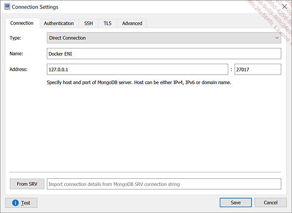

<div _ngcontent-uvf-c166="" id="bookContent" class="bookContent"><div _ngcontent-uvf-c166="" id="content"><div class="sect1" style="abcpdf-tag-visible: true" id="AU_2c7cc1f5-19e3-49c2-9edc-d60319772522" uri="ImagesUri_../download/5c180f28-f752-47db-98e8-8656c84b148d/images/">
  <h1 class="title">Déployer automatiquement avec Docker Compose</h1>
  <div class="sect2" id="refTitle0">
    <h2 class="title">1. Docker Compose<var style="display:none"> Docker Compose</var></h2>
    <div class="sect3" id="refTitle1">
      <h3 class="title">a. Principe</h3>
      <p class="defaut">Jusqu’à maintenant, nous nous sommes
concentrés sur le contenu des images Docker une par une,
mais notre exemple embarquant huit services (plus quelques autres
en dépendance dont nous allons bientôt parler),
il est évident que nous devons passer à une approche
un peu plus industrielle pour les lancer d’un seul coup ou tous
les arrêter. Il serait bien sûr possible de mettre
en œuvre des scripts appelant les commandes <span class="courier11">start</span> et <span class="courier11">stop</span> de
Docker, mais cela nécessiterait également de gérer
des options pour les paramétrages des conteneurs, avec
certainement un temps de mise au point.</p>
      <p class="defaut">Fort heureusement, il existe une grammaire
qui a été pensée dès le début
de Docker pour facilement gérer des ensembles de conteneurs,
sous forme de services décrits dans un seul fichier, permettant
ainsi l’arrêt et le démarrage automatique, mais
aussi des fonctionnalités plus avancées comme
le passage à l’échelle, la mise à jour
des versions d’image, la description de liens réseau entre les
conteneurs, etc. Cette grammaire est celle associée à Docker
Compose.</p>
    </div>
    <div class="sect3" id="refTitle2">
      <h3 class="title">b. Installation</h3>
      <p class="defaut">Nous reviendrons par la suite en détail
sur les principes et différentes options de cette application,
mais dans un premier temps, nous montrons simplement les deux lignes
de commandes nécessaires à l’installation, telles
que détaillées sur <a class="url" href="https://docs.docker.com/compose/install/" target="_blank">https://docs.docker.com/compose/install/</a>, à savoir
(au moment de l’écriture)&nbsp;:</p>
      <pre class="programlisting"><code class="hljs perl">sudo curl -L 
<span class="hljs-string">"https://github.com/docker/compose/releases/download/1.27.4/docker-&nbsp;
compose-$(uname -s)-$(uname -m)"</span> -o /usr/<span class="hljs-keyword">local</span>/bin/docker-compose&nbsp;
<span class="hljs-keyword">chmod</span> +<span class="hljs-keyword">x</span> /usr/<span class="hljs-keyword">local</span>/bin/docker-compose</code></pre>
      <p class="defaut">Docker Compose est prêt à l’utilisation,
mais il nous faut pour cela un fichier <span class="courier11">docker-compose.yml</span>,
comme précédemment. Nous n’allons toutefois pas utiliser
exactement le même fichier, de façon à montrer
une manière plus réaliste de pousser un ensemble
de services en production. Cette fois, nous ne partirons pas du
principe que les images sont compilées sur la même
machine, mais nous nous baserons à l’inverse sur une récupération
d’images distantes.</p>
      <div class="note">
        <div class="remarkimg"><span class="icon-note"></span></div>
        <div class="divinline">
          <p class="remarque">Pour Clear Linux (ou d’autres systèmes
utilisant des paquetages), l’installation se fait un peu différemment,
comme illustré dans le premier chapitre.</p>
        </div>
      </div>
    </div>
  </div>
  <div class="sect2" id="refTitle3">
    <h2 class="title">2. Écriture du fichier docker-compose.yml</h2>
    <p class="defaut">L’outil Docker Compose ne sert à rien
tant qu’on ne lui fournit par un fichier descriptif d’une application
au format attendu. Nous allons donc créer ce fichier en
expliquant progressivement la grammaire Docker Compose sur le cas de
notre application exemple.</p>
    <div class="sect3" id="refTitle4">
      <h3 class="title">a. Premier service</h3>
      <p class="defaut">Pour commencer en douceur, nous allons intégrer
un service très simple, à savoir celui nommé <span class="courier11">welcome</span>, qui ne fait rien d’autre
qu’afficher l’interface web d’accueil de l’application&nbsp;Middle
Office.</p>
      <div class="manip">
        <p><span class="icon-manip">&nbsp;</span>Si ce n’est pas fait, copiez le contenu du
code source de l’application en utilisant la commande <span class="courier11">git clone https://dev.azure.com/eni-kubernetes/_git/middleoffice-microservices-v2</span>.</p>
      </div>
      <div class="manip">
        <p><span class="icon-manip">&nbsp;</span>Placez-vous dans le répertoire <span class="courier11">middleoffice-microservices-v2</span> qui vient
d’être créé.</p>
      </div>
      <div class="manip">
        <p><span class="icon-manip">&nbsp;</span>Utilisez la commande <span class="courier11">git
checkout v0.2</span> pour vous positionner sur la branche du même
nom.</p>
      </div>
      <div class="note">
        <div class="remarkimg"><span class="icon-note"></span></div>
        <div class="divinline">
          <p class="remarque">L’intérêt ici est
que le lecteur se retrouve avec le code de l’application dans le même état
précisément que lors de l’écriture des
exemples, de façon à ce que le minimum de différences
interviennent et que le lecteur ne se retrouve pas obligé de
suivre les évolutions du projet, qui est vivant et en évolution
sinon fréquente, du moins régulière.</p>
        </div>
      </div>
      <div class="manip">
        <p><span class="icon-manip">&nbsp;</span>Créez un fichier nommé <span class="courier11">docker-compose.yml</span> et ouvrez un éditeur
de texte pour le remplir.</p>
      </div>
      <div class="manip">
        <p><span class="icon-manip">&nbsp;</span>Saisissez les lignes ci-dessous dans le fichier&nbsp;:</p>
      </div>
      <pre class="programlisting"><code class="hljs vbnet">version:&nbsp;’<span class="hljs-number">2.1</span>’&nbsp;
services:&nbsp;
&nbsp;
&nbsp;&nbsp;mo-welcome:&nbsp;
&nbsp;&nbsp;&nbsp;&nbsp;image:&nbsp;middleoffice/welcome&nbsp;
&nbsp;&nbsp;&nbsp;&nbsp;build:&nbsp;./welcome&nbsp;
&nbsp;&nbsp;&nbsp;&nbsp;container_name:&nbsp;mo-welcome&nbsp;
&nbsp;&nbsp;&nbsp;&nbsp;ports:&nbsp;
&nbsp;&nbsp;&nbsp;&nbsp;&nbsp;&nbsp;- <span class="hljs-number">80</span>:<span class="hljs-number">80</span>&nbsp;
&nbsp;&nbsp;&nbsp;&nbsp;restart:&nbsp;<span class="hljs-keyword">on</span>-failure</code></pre>
      <p class="defaut">Nous allons expliquer la syntaxe en détail
par la suite, mais pour l’instant, notons juste que la grammaire
utilisée est versionnée, les usages de Docker
Compose ayant évolué au fur et à mesure
des changements d’architecture de Docker dans sa jeunesse, et que
ce que nous saisissons dans un premier temps est une liste de services
(le concept sera précisé en temps voulu).</p>
      <div class="manip">
        <p><span class="icon-manip">&nbsp;</span>Sauvegardez le fichier.</p>
      </div>
      <div class="manip">
        <p><span class="icon-manip">&nbsp;</span>Sur la ligne de commande, lancez la commande
ci-dessous&nbsp;:</p>
      </div>
      <pre class="programlisting"><code class="hljs">docker-compose up -d</code></pre>
      <p class="defaut">L’affichage devrait être à peu
de choses près comme suit&nbsp;:</p>
      <div class="image">
        <div class="mediaobject"></div>
      </div>
      <p class="defaut">Si on appelle l’adresse http://localhost,
nous verrons l’affichage suivant, qui montre que le service est
bien lancé&nbsp;:</p>
      <div class="image">
        <div class="mediaobject"></div>
      </div>
      <div class="note">
        <div class="remarkimg"><span class="icon-note"></span></div>
        <div class="divinline">
          <p class="remarque">Dans la capture ci-dessus, comme l’auteur
utilise une machine Clear Linux dans le cloud Azure et que ce système
d’exploitation n’a pas de couche graphique pour des raisons de simplicité,
le port a été ouvert dans les règles
d’exposition réseau d’Azure et un navigateur sur une autre
machine accède au port HTTP (80, par défaut) en
utilisant l’adresse d’exposition de la machine sur le réseau
internet.</p>
        </div>
      </div>
      <div class="note">
        <div class="remarkimg"><span class="icon-note"></span></div>
        <div class="divinline">
          <p class="remarque">Attention, ce n’est pas parce que
le portail s’affiche que l’application est fonctionnelle, et il
est tout à fait normal à ce stade qu’un clic sur
le premier bouton, par exemple, aboutisse à une erreur
404. Nous allons progressivement faire fonctionner l’application,
mais ce premier lancement n’est qu’un galop d’essai pour montrer
son comportement global.</p>
        </div>
      </div>
      <p class="defaut">Reprenons point par point l’affichage résultant
de l’exécution de la commande <span class="courier11">up</span> pour
expliquer ce qui passe précisément&nbsp;:</p>
      <div class="divliste1">
        <ul class="liste1">
          <li class="liste1">
            <p class="liste1">Tout d’abord, sur
la commande elle-même, <span class="courier11">up</span> demande à Docker
Compose de démarrer&nbsp;les services qui sont décrits
dans le fichier <span class="courier11">docker-compose.yml</span>.
En l’occurrence,&nbsp;il n’y a pour l’instant qu’un seul service, à savoir celui
nommé <span class="courier11">welcome</span> et implémentant
le portail d’accueil de l’application, dont on voit plus haut la
page principale.</p>
          </li>
          <li class="liste1">
            <p class="liste1">L’option <span class="courier11">-d</span> permet,
comme lors de l’utilisation de <span class="courier11">docker run</span>,
de spécifier qu’on souhaite que le processus rende la main.
Dans ce cas, les logs éventuels ne sont pas affichés
sur la ligne de commande. Ceci est loin d’être la seule
similitude entre les deux approches, Docker Compose s’attachant à respecter
la même logique que Docker&nbsp;pour faciliter le passage
de la gestion d’un seul conteneur à un ensemble de conteneurs
dialoguant pour créer une application complète.</p>
          </li>
          <li class="liste1">
            <p class="liste1">La première ligne explique
que Docker Compose a créé un réseau pour
l’application, en utilisant le driver par défaut, ce qui
est logique car nous n’avons rien spécifié sur
ce point. Pour rendre l’application étanche des autres,
Docker Compose a recours à un réseau dédié dans
lequel il va placer tous les conteneurs créés
par le fichier descriptif. Ceci permet non seulement d’augmenter
la sécurité de l’application, mais aussi de maintenir
en même temps une certaine simplicité de connexion
entre les conteneurs d’une même application, le cas échéant.
Nous reviendrons plus en détail par la suite sur la gestion
de réseau de Docker Compose.</p>
          </li>
          <li class="liste1">
            <p class="liste1">La ligne suivante montre que Docker
Compose a lancé la compilation pour le service nommé <span class="courier11">mo-welcome</span>. Le fichier descriptif
de l’application stipule en effet dans l’attribut <span class="courier11">image</span> l’image Docker à utiliser
pour lancer ce conteneur (pour l’instant, nous ne faisons pas la
différence entre un service et un conteneur, mais il y
en a une), à savoir <span class="courier11">middleoffice/welcome</span>.
Or, à moins que l’utilisateur ne l’ait récupérée&nbsp;sur
Docker Hub avec un <span class="courier11">docker pull</span>,
cette image n’est pas dans le cache local, et Docker Compose en
déduit donc qu’il doit la compiler à partir de
l’autre information fournie dans le fichier dans l’attribut <span class="courier11">build</span>.</p>
          </li>
          <li class="liste1">
            <p class="liste1">Comme la valeur de cet attribut
est <span class="courier11">./welcome</span>, Docker Compose
sait que l’endroit&nbsp;où il trouvera le contexte
et le fichier <span class="courier11">Dockerfile</span> est dans
ce sous-répertoire <span class="courier11">welcome</span>.
C’est bien le cas, comme le montre la sortie de commande ci-dessous&nbsp;:</p>
          </li>
        </ul>
      </div>
      <pre class="programlisting"><code class="hljs sql">azureuser@ClearDockerENI~/middleoffice-microservices-v2 $ 
ls -l welcome/&nbsp;
total 32&nbsp;
-rw-r<span class="hljs-comment">--r-- 1 azureuser azureuser 1721 Sep 27 21:59 about.html&nbsp;</span>
-rw-r<span class="hljs-comment">--r-- 1 azureuser azureuser&nbsp;&nbsp;157 Sep 27 21:59 Dockerfile&nbsp;</span>
-rw-r<span class="hljs-comment">--r-- 1 azureuser azureuser&nbsp;&nbsp;&nbsp;&nbsp;0 Sep 27 21:59 exemples.html&nbsp;</span>
drwxr-xr-x 2 azureuser azureuser 4096 Sep 27 21:59 images&nbsp;
-rw-r<span class="hljs-comment">--r-- 1 azureuser azureuser 1606 Sep 27 21:59 index.html&nbsp;</span>
-rw-r<span class="hljs-comment">--r-- 1 azureuser azureuser&nbsp;&nbsp;397 Sep 27 21:59 </span>
notImplemented.html&nbsp;
-rw-r<span class="hljs-comment">--r-- 1 azureuser azureuser 1455 Sep 27 21:59 </span>
rechercheDemande.html&nbsp;
-rw-r<span class="hljs-comment">--r-- 1 azureuser azureuser&nbsp;&nbsp;&nbsp;&nbsp;0 Sep 27 21:59 roles.html&nbsp;</span>
-rw-r<span class="hljs-comment">--r-- 1 azureuser azureuser&nbsp;&nbsp;230 Sep 27 21:59 search.js&nbsp;</span>
-rw-r<span class="hljs-comment">--r-- 1 azureuser azureuser 3901 Sep 27 21:59 style.css</span></code></pre>
      <div class="divliste1">
        <ul class="liste1">
          <li class="liste1">
            <p class="liste1">Ceci explique pourquoi
on voit dans les logs de la commande <span class="courier11">docker-compose
up -d</span> une référence aux étapes
de compilation de l’image Docker, commençant par un <span class="courier11">FROM</span> sur une vieille version de Nginx.
Le fichier <span class="courier11">Dockerfile</span> contient en
effet ces instructions&nbsp;:</p>
          </li>
        </ul>
      </div>
      <pre class="programlisting"><code class="hljs css"><span class="hljs-selector-tag">azureuser</span>@<span class="hljs-keyword">ClearDockerENI</span>~/<span class="hljs-keyword">middleoffice</span>-<span class="hljs-keyword">microservices</span>-<span class="hljs-keyword">v2</span> $ cat &nbsp;
welcome/Dockerfile&nbsp;
FROM nginx:<span class="hljs-number">1.15</span>.<span class="hljs-number">5</span>&nbsp;
ADD *.css /usr/share/nginx/html/&nbsp;
ADD images /usr/share/nginx/html/images&nbsp;
ADD *.html /usr/share/nginx/html/&nbsp;
ADD *.js /usr/share/nginx/html/</code></pre>
      <div class="divliste1">
        <ul class="liste1">
          <li class="liste1">
            <p class="liste1">La ligne <span class="courier11">Successfully tagged middleoffice/welcome:latest</span> montre
que la compilation appelée par Docker Compose s’est bien
passée et que l’étiquette a été affectée
avec celle fournie par l’attribut <span class="courier11">image</span>,
ce qui permettra au prochain lancement de s’exécuter beaucoup
plus vite.</p>
          </li>
          <li class="liste1">
            <p class="liste1">L’affichage rappelle sous forme
d’avertissement (warning en anglais) ce dont nous parlions plus
haut, à savoir que l’image pour le service <span class="courier11">mo-welcome</span> a été créée
parce qu’elle n’existe pas dans le cache. Docker Compose donne par ailleurs à cette
occasion les commandes permettant de compiler les images ou bien
de lancer l’application&nbsp;après une étape
de compilation, ce qui ne sera plus le cas par défaut,
puisque la compilation s’est bien passée et que l’image pour
le service est désormais dans le cache local.</p>
          </li>
          <li class="liste1">
            <p class="liste1">Le déroulé du
lancement se termine par le message <span class="courier11">Creating
mo-welcome ... done</span>, signifiant que le service a bien été démarré.
La main est alors rendue par la commande.</p>
          </li>
        </ul>
      </div>
      <p class="defaut">Un appel à la commande <span class="courier11">docker ps</span> permet de constater que
le conteneur lancé a bien été nommé d’après
l’attribut <span class="courier11">container_name</span> du
fichier <span class="courier11">docker-compose.yml</span>&nbsp;:</p>
      <div class="image">
        <div class="mediaobject"></div>
      </div>
      <p class="defaut">On voit également que le port 80
du conteneur a bien été redirigé sur
le port 80 de la machine locale, ce qui nous permet d’avoir accès
au contenu applicatif du conteneur, à savoir un serveur
web qui expose principalement des fichiers statiques.</p>
      <p class="defaut">Le dernier point à expliquer est
le <span class="courier11">restart:&nbsp;on-failure</span>,
qui permet simplement de dire à Docker Compose qu’il doit
relancer le conteneur s’il s’arrête suite à une
erreur. Cette commande occupe une simple ligne, mais il s’agit justement
d’une fonctionnalité qui aurait été complexe à mettre
en œuvre à l’aide d’un script. L’utilité de
Docker Compose peut se poser si on ne fait que lancer et arrêter
plusieurs conteneurs d’un coup, mais voici une première
fonctionnalité qui apporte une grande valeur à l’usage,
et nous allons voir par la suite qu’il y en a de nombreuses autres
et que l’utilisation de Docker Compose (ou d’une autre grammaire
de composition, bien sûr) est quasi indispensable dès
qu’on sort de simples exercices de manipulation de conteneurs uniques.</p>
    </div>
    <div class="sect3" id="refTitle5">
      <h3 class="title">b. Un service sans interface graphique</h3>
      <p class="defaut">Nous allons complexifier un peu l’écriture
du fichier descriptif en rajoutant un service qui ne fonctionne
pas seul mais qui nécessite une dépendance pour s’exécuter
correctement. Il s’agit du service <span class="courier11">parametrage</span>,
qui a besoin d’une base de données MongoDB car il doit
stocker des informations et, pour être précis,
des informations de paramétrage, comme son nom l’indique.</p>
      <p class="defaut">Le fichier <span class="courier11">docker-compose.yml</span> est
complété jusqu’à obtenir la forme ci-dessous&nbsp;:</p>
      <pre class="programlisting"><code class="hljs cs">version: ’<span class="hljs-number">2.1</span>’&nbsp;
services:&nbsp;
&nbsp;
&nbsp;&nbsp;mo-welcome:&nbsp;
&nbsp;&nbsp;&nbsp;&nbsp;image: middleoffice/welcome&nbsp;
&nbsp;&nbsp;&nbsp;&nbsp;build: ./welcome&nbsp;
&nbsp;&nbsp;&nbsp;&nbsp;container_name: mo-welcome&nbsp;
&nbsp;&nbsp;&nbsp;&nbsp;ports:&nbsp;
&nbsp;&nbsp;&nbsp;&nbsp;&nbsp;&nbsp;- <span class="hljs-number">80</span>:<span class="hljs-number">80</span>&nbsp;
&nbsp;&nbsp;&nbsp;&nbsp;restart: <span class="hljs-keyword">on</span>-failure&nbsp;
&nbsp;
&nbsp;&nbsp;mo-parametrage:&nbsp;
&nbsp;&nbsp;&nbsp;&nbsp;image: middleoffice/parametrage&nbsp;
&nbsp;&nbsp;&nbsp;&nbsp;build: ./parametrage&nbsp;
&nbsp;&nbsp;&nbsp;&nbsp;container_name: mo-parametrage&nbsp;
&nbsp;&nbsp;&nbsp;&nbsp;ports:&nbsp;
&nbsp;&nbsp;&nbsp;&nbsp;&nbsp;&nbsp;- <span class="hljs-number">81</span>:<span class="hljs-number">80</span>&nbsp;
&nbsp;&nbsp;&nbsp;&nbsp;restart: <span class="hljs-keyword">on</span>-failure<b>&nbsp;
&nbsp;&nbsp;&nbsp;&nbsp;links:&nbsp;
&nbsp;&nbsp;&nbsp;&nbsp;&nbsp;&nbsp;- mo-database:mongo&nbsp;
&nbsp;&nbsp;&nbsp;&nbsp;environment:&nbsp;
&nbsp;&nbsp;&nbsp;&nbsp;&nbsp;&nbsp;- URL_SRV_DB_PARAM=mongodb:<span class="hljs-comment">//mongo:27017/middleoffice&nbsp;</span>
&nbsp;&nbsp;&nbsp;&nbsp;depends_on:&nbsp;
&nbsp;&nbsp;&nbsp;&nbsp;&nbsp;&nbsp;mo-database:&nbsp;
&nbsp;&nbsp;&nbsp;&nbsp;&nbsp;&nbsp;&nbsp;&nbsp;condition: service_started</b>&nbsp;
&nbsp;
&nbsp;&nbsp;mo-database:&nbsp;
&nbsp;&nbsp;&nbsp;&nbsp;image: mongo:<span class="hljs-number">3.6</span><span class="hljs-number">.4</span>&nbsp;
&nbsp;&nbsp;&nbsp;&nbsp;container_name: mo-database&nbsp;
&nbsp;&nbsp;&nbsp;&nbsp;restart: <span class="hljs-keyword">on</span>-failure<b>&nbsp;
&nbsp;&nbsp;&nbsp;&nbsp;volumes:&nbsp;
&nbsp;&nbsp;&nbsp;&nbsp;&nbsp;&nbsp;- mongodata:/data/db&nbsp;
&nbsp;
volumes:&nbsp;
&nbsp;&nbsp;mongodata:</b></code></pre>
      <p class="defaut">Des similitudes existent avec le premier service
que nous avons déployé et nous ne reviendrons&nbsp;donc
pas dessus, mais continuerons l’explication détaillée sur
les paramétrages supplémentaires, à savoir&nbsp;:</p>
      <div class="divliste1">
        <ul class="liste1">
          <li class="liste1">
            <p class="liste1">Le service <span class="courier11">mo-parametrage</span> est exposé sur
le port 81, le 80 étant déjà utilisé par
le portail graphique démarré plus haut.</p>
          </li>
          <li class="liste1">
            <p class="liste1">Ce service de paramétrage
contient un lien vers le service <span class="courier11">mo-database</span> et il
doit voir en interne ce service selon un alias nommé <span class="courier11">mongo</span>.</p>
          </li>
          <li class="liste1">
            <p class="liste1">C’est ce qui permet de paramétrer
en dessous la variable d’environnement <span class="courier11">URL_SRV_DB_PARAM</span>,&nbsp;de
façon que le code du service pointe correctement vers la
base de données MongoDB, démarrée par
un service un peu plus bas dans le fichier.</p>
          </li>
        </ul>
      </div>
      <div class="note">
        <div class="remarkimg"><span class="icon-note"></span></div>
        <div class="divinline">
          <p class="remarque">Nous utilisons à dessein
des libellés différents pour le nom du service
de base de données, le nom de l’alias qui lui est associé sur
le lien et enfin le nom du protocole utilisé dans la chaîne
de connexion, de façon à ce que le lecteur voie
plus facilement quel paramètre est utilisé à quel
endroit.</p>
        </div>
      </div>
      <div class="divliste1">
        <ul class="liste1">
          <li class="liste1">
            <p class="liste1">Enfin, le service
contient un autre attribut qui n’a pas été utilisé précédemment,
mais qui permet de déclarer une dépendance au
service de base de données. Le lien, en effet, n’exprime
qu’un alias réseau vers le service, tandis que la dépendance
exprimée&nbsp;par <span class="courier11">depends_on</span> permet
de jouer sur l’ordre de lancement des services. En spécifiant
la condition telle que vue plus haut, Docker Compose ne lancera
le service de paramétrage que lorsque le service <span class="courier11">mo-database</span> sera actif.</p>
          </li>
        </ul>
      </div>
      <div class="note">
        <div class="remarkimg"><span class="icon-note"></span></div>
        <div class="divinline">
          <p class="remarque">Attention, il est bien question du
service Docker Compose, et pas du processus de base de données
lui-même. Il est possible que le conteneur soit démarré, mais
que le processus ne réponde pas encore sur son port natif.
Si le client essaie aussitôt d’appeler sa dépendance&nbsp;et
n’est pas assez robuste pour supporter son absence temporaire, alors
il vaudra mieux mettre en place une dépendance sur le statut
de santé du service. Ce fonctionnement un peu plus avancé sera
montré plus bas. Dans le cas de cette application, une
interaction utilisateur est nécessaire pour déclencher
un appel à la base de données, donc les chances
sont quasi inexistantes que MongoDB n’ait pas démarré à temps.</p>
        </div>
      </div>
      <div class="divliste1">
        <ul class="liste1">
          <li class="liste1">
            <p class="liste1">Un troisième
service est déclaré, qui correspond à la
base de données dont il était question dans les
explications précédentes. Il ne contient pas d’attribut <span class="courier11">build</span> puisqu’il s’agit d’une image
officielle que nous consommerons depuis le registre Docker Hub.</p>
          </li>
          <li class="liste1">
            <p class="liste1">Il contient par contre un autre
nouvel attribut, à savoir <span class="courier11">volumes</span>.
Celui-ci permet de déclarer des associations de volumes
comme nous le ferions en ligne de commande <span class="courier11">docker
run</span> avec l’option <span class="courier11">-v</span>, mais
cette fois nous pointons sur un volume nommé <span class="courier11">mongodata</span>.</p>
          </li>
          <li class="liste1">
            <p class="liste1">Ce volume est déclaré tout
en bas du fichier, dans une autre section nommée <span class="courier11">volumes</span>,&nbsp;au même
niveau que la section <span class="courier11">services</span>,
dans laquelle nous avions pour l’instant inclus toutes les descriptions
de contenu. Seul le nom est déclaré, ce qui fera
que le volume sera créé simplement sur la machine
locale, sans aucune option&nbsp;particulière. Le fait
de passer par un volume nommé permet de plus facilement
le gérer plutôt que si nous avions laissé cette
charge au conteneur du système de base de données
MongoDB.</p>
          </li>
          <li class="liste1">
            <p class="liste1">À noter que la description
du service de base de données ne contient pas de sections <span class="courier11">ports</span>&nbsp;; les liens entre conteneurs
n’ont pas besoin d’une quelconque exposition de port, car tous les
conteneurs sont sur le même réseau et peuvent
s’appeler librement les uns les autres. L’exposition servirait si nous
souhaitions rendre le port accessible à l’extérieur
de l’application, voire sur Internet, mais ceci est une très
mauvaise idée pour une base de données comme MongoDB
qui n’est pas sécurisée par défaut. Il
vaut mieux donc ne rien préciser pour le port 27017.</p>
          </li>
        </ul>
      </div>
      <p class="defaut">Une fois le fichier mis à jour, la
commande <span class="courier11">docker compose up -d</span> peut être
simplement relancée. Il n’est pas utile d’arrêter
les conteneurs, et cela irait même à l’encontre&nbsp;des
besoins de robustesse des applications. Docker Compose analysera
quels sont les changements à effectuer et ne touchera pas
au service déjà lancé et qui n’a pas été modifié,
mais lancera les deux autres services ajoutés, dans l’ordre
précisé par la notion de dépendance (qui
surclasse bien sûr l’ordre par défaut qui est
l’ordre de lecture du fichier). Conformément à ce
qu’on peut attendre, on verra passer une information selon laquelle
le volume est créé, de la même manière
qu’on avait vu se créer le réseau par défaut lors
du premier lancement (celui-ci est d’ailleurs logiquement gardé)&nbsp;:</p>
      <pre class="programlisting"><code class="hljs javascript">Creating volume <span class="hljs-string">"middleoffice-microservices-v2_mongodata"</span> 
<span class="hljs-keyword">with</span> <span class="hljs-keyword">default</span> driver</code></pre>
      <p class="defaut">Et pour ce qui est de la base de données,
pas de compilation bien sûr, mais un message pour indiquer
que l’image, normalement absente du cache local, est téléchargée
depuis le registre par défaut&nbsp;:</p>
      <pre class="programlisting"><code class="hljs css"><span class="hljs-selector-tag">Pulling</span> <span class="hljs-selector-tag">mo-database</span> (<span class="hljs-selector-tag">mongo</span><span class="hljs-selector-pseudo">:3.6.4)...</span></code></pre>
      <p class="defaut">Comme le service lancé correspond à une
API et non une interface graphique, l’appeler fournira un résultat
beaucoup plus réduit&nbsp;:</p>
      <div class="image">
        <div class="mediaobject"></div>
      </div>
      <p class="defaut">En l’occurrence, nous appelons le port 81
en spécifiant le chemin <span class="courier11">/api/parametrage</span> exposé par
le code source du service et qui permet de lister les paramètres
de l’application. Ceux-ci étant vides et le résultat étant
fourni en JSON, on obtient un array vide, ce qui correspond à la
chaîne <span class="courier11">[]</span>.</p>
    </div>
    <div class="sect3" id="refTitle6">
      <h3 class="title">c. Mise en place de Traefik<var style="display:none"> Traefik</var></h3>
      <p class="defaut">Avant de continuer à déployer
les services composant l’application exemple et de consommer de
plus en plus de ports réseau, il convient de se poser la
question de l’industrialisation&nbsp;d’une telle approche. Il
n’est pas très propre d’utiliser un numéro de
port pour ce qui relève, même s’il s’agit de plusieurs
processus, d’une seule et même application. Une bonne pratique
est plutôt de se baser sur des chemins distincts dans l’URL
pour distinguer les différents services.</p>
      <p class="defaut">C’est d’ailleurs le comportement du portail
tel qu’il est codé, et on peut voir par&nbsp;exemple
qu’un clic sur l’icône <b>Créer une nouvelle demande</b> appelle l’URL
relative <span class="courier11">/demande-creer/demandes/créer</span>.
Pour finir de déployer correctement l’application exemple,
il serait donc théoriquement nécessaire de modifier
le code source et d’affecter des ports différents pour
les appels à des services hors du portail, ce qui nécessiterait
au passage d’utiliser des URL absolues et non relatives. On voit
bien que ce mode de fonctionnement pose un problème et
qu’il est nécessaire de trouver une solution plus souple.
C’est Traefik qui va nous l’apporter.</p>
      <p class="defaut">Un service est également une abstraction
du conteneur qui l’implémente, et si on met en place plusieurs
services pour équilibrer une charge, il serait idéal
que tous les conteneurs soient automatiquement rattachés à un
système d’équilibrage de charge qui agirait en
tant que frontal et enverrait les flux sur tel ou tel conteneur à tour
de rôle. Si en plus le service pouvait se charger de l’exposition
sur un nom de domaine et faire en sorte que les conteneurs instanciés n’aient
aucune idée de la façon dont ils sont consommés
par le client, alors l’architecture sera idéalement découplée.
Bref, un reverse&nbsp;proxy comprenant le mode de fonctionnement
de Docker et capable de voir apparaître les instances de
conteneur serait idéal.</p>
      <p class="defaut">Il se trouve que ce genre de logiciel idéal
existe et qu’il est même très simple à mettre
en œuvre. Des solutions plus sophistiquées existent,
mais le logiciel Traefik est simple et très efficace, et
c’est celui que nous allons incorporer dans notre <span class="courier11">docker-compose.yml</span> pour lui donner
plus de souplesse quant à l’exposition des services.</p>
      <p class="defaut">Le comportement de Traefik et son utilisation
dans des conditions plus proches de la production seront détaillés
dans le chapitre sur l’industrialisation des architectures basées&nbsp;sur
Docker, mais il n’était pas logique de montrer une application
basée sur une dizaine de microservices sans aucune couche
dédiée à l’exposition des services, et
nous montrerons donc rapidement l’usage de Traefik dans notre application
exemple, avant de continuer à rajouter des services.</p>
      <p class="defaut">Comme Traefik existe dans deux versions majeures,
la version 1 étant encore supportée, nous profiterons
de ces deux sections différentes utilisant Traefik pour
montrer les deux versions, en commençant par utiliser la
version 1 ci-dessous.</p>
      <p class="defaut">La première action à réaliser
est de lancer Traefik lui-même, qui est une application
serveur comme une autre et qui bénéficie, elle
aussi, d’une image Docker officielle, ce qui simplifie fortement
les choses. Pour cela, nous ajoutons les lignes suivantes dans la
liste des services du fichier descriptif pour Docker Compose&nbsp;:</p>
      <pre class="programlisting"><code class="hljs javascript">&nbsp;&nbsp;traefik:&nbsp;
&nbsp;&nbsp;&nbsp;&nbsp;image: traefik:<span class="hljs-number">1.7</span><span class="hljs-number">.26</span>-alpine&nbsp;
&nbsp;&nbsp;&nbsp;&nbsp;container_name: mo-traefik&nbsp;
&nbsp;&nbsp;&nbsp;&nbsp;ports:&nbsp;
&nbsp;&nbsp;&nbsp;&nbsp;&nbsp;&nbsp;- <span class="hljs-number">80</span>:<span class="hljs-number">80</span>&nbsp;
&nbsp;&nbsp;&nbsp;&nbsp;&nbsp;&nbsp;- <span class="hljs-number">88</span>:<span class="hljs-number">8080</span>&nbsp;
&nbsp;&nbsp;&nbsp;&nbsp;restart: always&nbsp;
&nbsp;&nbsp;&nbsp;&nbsp;volumes:&nbsp;
&nbsp;&nbsp;&nbsp;&nbsp;&nbsp;&nbsp;- <span class="hljs-regexp">/var/</span>run/docker.sock:<span class="hljs-regexp">/var/</span>run/docker.sock&nbsp;
&nbsp;&nbsp;&nbsp;&nbsp;command: --web --docker --&nbsp;
docker.domain=enidocker.francecentral.cloudapp.azure.com 
--logLevel=DEBUG</code></pre>
      <p class="defaut">Sans rentrer dans les détails, qui
seront revus dans le dernier chapitre, les instructions essentielles
sont les suivantes&nbsp;:</p>
      <div class="divliste1">
        <ul class="liste1">
          <li class="liste1">
            <p class="liste1">L’image en version
1 la plus récente au moment de l’écriture est
utilisée. Le fait d’utiliser une version fixe assure une
stabilité à l’exemple. Le suffixe <span class="courier11">-alpine</span> indique qu’il s’agit d’une
image légère.</p>
          </li>
          <li class="liste1">
            <p class="liste1">Le port 80 est exposé,
car c’est par là que les services seront vus depuis le
réseau externe.&nbsp;</p>
          </li>
          <li class="liste1">
            <p class="liste1">Le port 8080 est exposé sur
le port 88 de la machine locale&nbsp;; il s’agit de l’interface
de monitoring de Traefik lui-même. En production, elle
ne serait pas exposée sur Internet,&nbsp;mais pour
montrer rapidement ci-dessous son aspect, cela ne pose pas de problème.</p>
          </li>
          <li class="liste1">
            <p class="liste1">Traefik est un logiciel prévu
pour être stable, vu son rôle essentiel, mais
pour cette même raison, le mode de redémarrage
est <span class="courier11">always</span>, de façon qu’il
soit toujours redémarré,&nbsp;que le conteneur
s’arrête avec un code d’erreur ou pas et quel que soit
le nombre de fois où il s’arrête.</p>
          </li>
          <li class="liste1">
            <p class="liste1">Le volume lié ne correspond
pas à un répertoire ou à un fichier,
mais à un socket d’échanges d’informations sur
les actions de Docker, dont Traefik a besoin car il adapte dynamiquement
son comportement de reverse proxy lorsque des conteneurs apparaissent
ou disparaissent.</p>
          </li>
          <li class="liste1">
            <p class="liste1">Les options de lancement permettent
de démarrer Traefik en mode Docker (il peut servir de load
balancer/reverse proxy pour d’autres solutions d’orchestration
comme Kubernetes ou Rancher) et de lui spécifier dans notre cas
le nom de domaine sur lequel il devra exposer les services.</p>
          </li>
          <li class="liste1">
            <p class="liste1">L’option <span class="courier11">--web</span> permet
d’activer la fonction de dashboard de suivi de fonctionnement de
Traefik, qui est exposée par l’image sur le port 8080.</p>
          </li>
          <li class="liste1">
            <p class="liste1">L’option <span class="courier11">--logLevel=DEBUG</span> permet,
pour nos tests, d’avoir un haut niveau de verbosité des
logs de Traefik. Il est fortement recommandé de réduire
ce niveau lors d’une utilisation en production, pour optimiser la performance
et ne pas surcharger l’espace disque.</p>
          </li>
        </ul>
      </div>
      <p class="defaut">Ceci assure le fonctionnement de Traefik,
mais pas la façon dont il expose tel ou tel service, et,
conformément à un sain partage des responsabilités,
c’est chacun des services qui va fournir les informations d’exposition
qui sont de son ressort, Traefik s’occupant&nbsp;du port principal,
du nom de domaine et du routage dynamique. Comme on le voit ci-dessous
en gras dans le fichier <span class="courier11">docker-compose.yml</span> repris
au complet, les services ajoutent des étiquettes pour spécifier
quels ports ils exposent individuellement et sous quel chemin d’exposition
dans l’URL ils doivent être exposés&nbsp;:</p>
      <pre class="programlisting"><code class="hljs cs">version: ’<span class="hljs-number">2.1</span>’&nbsp;
services:&nbsp;
&nbsp;
&nbsp;&nbsp;traefik:&nbsp;
&nbsp;&nbsp;&nbsp;&nbsp;image: traefik:<span class="hljs-number">1.7</span><span class="hljs-number">.26</span>-alpine&nbsp;
&nbsp;&nbsp;&nbsp;&nbsp;container_name: mo-traefik&nbsp;
&nbsp;&nbsp;&nbsp;&nbsp;ports:&nbsp;
&nbsp;&nbsp;&nbsp;&nbsp;&nbsp;&nbsp;- <span class="hljs-number">80</span>:<span class="hljs-number">80</span>&nbsp;
&nbsp;&nbsp;&nbsp;&nbsp;&nbsp;&nbsp;- <span class="hljs-number">88</span>:<span class="hljs-number">8080</span>&nbsp;
&nbsp;&nbsp;&nbsp;&nbsp;restart: always&nbsp;
&nbsp;&nbsp;&nbsp;&nbsp;volumes:&nbsp;
&nbsp;&nbsp;&nbsp;&nbsp;&nbsp;&nbsp;- /<span class="hljs-keyword">var</span>/run/docker.sock:/<span class="hljs-keyword">var</span>/run/docker.sock&nbsp;
&nbsp;&nbsp;&nbsp;&nbsp;command: --web --docker --&nbsp;
docker.domain=enidocker.francecentral.cloudapp.azure.com --&nbsp;
logLevel=DEBUG&nbsp;
&nbsp;
&nbsp;&nbsp;mo-welcome:&nbsp;
&nbsp;&nbsp;&nbsp;&nbsp;image: middleoffice/welcome&nbsp;
&nbsp;&nbsp;&nbsp;&nbsp;build: ./welcome&nbsp;
&nbsp;&nbsp;&nbsp;&nbsp;container_name: mo-welcome&nbsp;
&nbsp;&nbsp;&nbsp;&nbsp;restart: <span class="hljs-keyword">on</span>-failure<b>&nbsp;
&nbsp;&nbsp;&nbsp;&nbsp;labels:&nbsp;
&nbsp;&nbsp;&nbsp;&nbsp;&nbsp;&nbsp;traefik.frontend.rule: <span class="hljs-string">"Path: /"</span>&nbsp;
&nbsp;&nbsp;&nbsp;&nbsp;&nbsp;&nbsp;traefik.port: <span class="hljs-string">"80"</span></b>&nbsp;
&nbsp;
&nbsp;&nbsp;mo-parametrage:&nbsp;
&nbsp;&nbsp;&nbsp;&nbsp;image: middleoffice/parametrage&nbsp;
&nbsp;&nbsp;&nbsp;&nbsp;build: ./parametrage&nbsp;
&nbsp;&nbsp;&nbsp;&nbsp;container_name: mo-parametrage&nbsp;
&nbsp;&nbsp;&nbsp;&nbsp;restart: <span class="hljs-keyword">on</span>-failure<b>&nbsp;
&nbsp;&nbsp;&nbsp;&nbsp;labels:&nbsp;
&nbsp;&nbsp;&nbsp;&nbsp;&nbsp;&nbsp;traefik.frontend.rule: <span class="hljs-string">"PathPrefixStrip: /parametrage"</span>&nbsp;
&nbsp;&nbsp;&nbsp;&nbsp;&nbsp;&nbsp;traefik.port: <span class="hljs-string">"80"</span></b>&nbsp;
&nbsp;&nbsp;&nbsp;&nbsp;links:&nbsp;
&nbsp;&nbsp;&nbsp;&nbsp;&nbsp;&nbsp;- mo-database:mongo&nbsp;
&nbsp;&nbsp;&nbsp;&nbsp;environment:&nbsp;
&nbsp;&nbsp;&nbsp;&nbsp;&nbsp;&nbsp;- URL_SRV_DB_PARAM=mongodb:<span class="hljs-comment">//mongo:27017&nbsp;</span>
&nbsp;&nbsp;&nbsp;&nbsp;depends_on:&nbsp;
&nbsp;&nbsp;&nbsp;&nbsp;&nbsp;&nbsp;mo-database:&nbsp;
&nbsp;&nbsp;&nbsp;&nbsp;&nbsp;&nbsp;&nbsp;&nbsp;condition: service_started&nbsp;
&nbsp;
&nbsp;&nbsp;mo-database:&nbsp;
&nbsp;&nbsp;&nbsp;&nbsp;image: mongo:<span class="hljs-number">3.6</span><span class="hljs-number">.4</span>&nbsp;
&nbsp;&nbsp;&nbsp;&nbsp;container_name: mo-database&nbsp;
&nbsp;&nbsp;&nbsp;&nbsp;restart: <span class="hljs-keyword">on</span>-failure&nbsp;
&nbsp;&nbsp;&nbsp;&nbsp;volumes:&nbsp;
&nbsp;&nbsp;&nbsp;&nbsp;&nbsp;&nbsp;- mongodata:/data/db&nbsp;
&nbsp;&nbsp;&nbsp;&nbsp;ports:&nbsp;
&nbsp;&nbsp;&nbsp;&nbsp;&nbsp;&nbsp;- <span class="hljs-number">127.0</span><span class="hljs-number">.0</span><span class="hljs-number">.1</span>:<span class="hljs-number">27017</span>:<span class="hljs-number">27017</span>&nbsp;
&nbsp;
volumes:&nbsp;
&nbsp;&nbsp;mongodata:</code></pre>
      <p class="defaut">Dans notre cas, nous exposons simplement le
chemin racine qui est alors branché sur le conteneur exécutant
le portail d’accueil graphique de l’application, ainsi que le chemin <span class="courier11">/parametrage</span>, qui pointera
sur le conteneur correspondant, mais en enlevant au passage cette
partie du chemin. Ainsi, le chemin <span class="courier11">/api/parametrage</span> exposé par
l’application .NET dans l’image <span class="courier11">middleoffice/parametrage</span> sera
appelable de l’extérieur par le chemin <span class="courier11">/parametrage/api/parametrage</span>.
La première partie du chemin sera prise en compte par Traefik
pour rediriger la requête sur le bon conteneur (c’est le
fonctionnement de <span class="courier11">PathPrefix</span>), puis
Traefik tronquera le début (c’est la différence
de fonctionnement entre <span class="courier11">PathPrefix</span> et <span class="courier11">PathPrefixStrip</span>) pour faire en sorte
que le conteneur soit appelé sur <span class="courier11">/api/parametrage</span> seulement.</p>
      <div class="note">
        <div class="remarkimg"><span class="icon-note"></span></div>
        <div class="divinline">
          <p class="remarque">Ce mode de fonctionnement peut paraître
complexe car le seul chemin <span class="courier11">/api/parametrage</span> pourrait
suffire à retrouver pour l’instant le bon service. Toutefois,
rien n’empêcherait&nbsp;un autre service d’exposer
cette même URL, et il est donc important de les distinguer
par un autre identifiant. Il se trouve simplement que cela aurait été inutilement
complexe de faire en sorte que le conteneur <span class="courier11">mo-parametrage</span> soit
exposé sur un chemin différent de <span class="courier11">parametrage</span> juste pour éviter
la confusion avec le chemin que l’applicatif expose, à savoir <span class="courier11">/api/parametrage</span>.</p>
        </div>
      </div>
      <p class="defaut">Le service <span class="courier11">mo-database</span> ne
contient pas de telles étiquettes liées à Traefik, car
la base de données n’a pas à être exposée à l’externe.
Le fait d’utiliser un reverse proxy permet d’ailleurs justement
d’avoir un niveau supplémentaire qui va faciliter l’utilisation
de celle-ci, par exemple en ajoutant le code suivant dans le service&nbsp;:</p>
      <pre class="programlisting"><code class="hljs css">&nbsp;&nbsp;&nbsp;&nbsp;<span class="hljs-selector-tag">ports</span>:&nbsp;
&nbsp;&nbsp;&nbsp;&nbsp;&nbsp;&nbsp;<span class="hljs-selector-tag">-</span> 127<span class="hljs-selector-class">.0</span><span class="hljs-selector-class">.0</span><span class="hljs-selector-class">.1</span><span class="hljs-selector-pseudo">:27017</span><span class="hljs-selector-pseudo">:27017</span></code></pre>
      <p class="defaut">En mettant en place ce paramétrage,
la gestion de la base de données est assez bien affinée
car&nbsp;:</p>
      <div class="divliste1">
        <ul class="liste1">
          <li class="liste1">
            <p class="liste1">Les conteneurs y ont
accès car ils font tous partie du même réseau
par défaut (nous n’en avons pas spécifié plusieurs
dans le fichier <span class="courier11">docker-compose.yml</span>,
mais il aurait&nbsp;été possible de cloisonner
les services par réseau si nécessaire). Le service
de gestion de paramétrage a donc bien accès à la
base.</p>
          </li>
          <li class="liste1">
            <p class="liste1">Sur le réseau local, la
machine locale (127.0.0.1) - et elle seulement - peut voir le port
27017, ce qui permettra de se connecter directement à la
base pour des opérations de débogage ou de sauvegarde
ponctuelle, soit des actes d’administration.</p>
          </li>
          <li class="liste1">
            <p class="liste1">Les accès de l’extérieur
(réseau Internet) seront dans l’impossibilité de
voir la machine,&nbsp;car Traefik ne réexpose pas le
port 27017.</p>
          </li>
        </ul>
      </div>
      <p class="defaut">Bref, le mode de fonctionnement est à peu
près conforme à ce qu’on attend d’un service de
base de données en production.</p>
      <p class="defaut">Quant au service Traefik lui-même,
il peut être suivi grâce à l’interface
rapidement citée plus haut&nbsp;:</p>
      <div class="image">
        <div class="mediaobject"></div>
      </div>
      <p class="defaut">L’onglet <b>Health</b> permet
de suivre le temps de réponse moyen ainsi que la répartition
des codes de retour des requêtes passées. Dans
la capture ci-dessous, nous voyons par exemple que certaines ressources
ne sont pas correctement exposées et provoquent des erreurs
404&nbsp;:</p>
      <div class="image">
        <div class="mediaobject"></div>
      </div>
      <p class="defaut">Nous reviendrons plus en détail sur
ce sujet par la suite&nbsp;; l’étape suivante est de
compléter notre description de l’application Middle Office.</p>
    </div>
    <div class="sect3" id="refTitle7">
      <h3 class="title">d. Complément du fichier descriptif</h3>
      <p class="defaut">Les deux premiers services ont permis de couvrir
presque tous les paramètres à utiliser pour notre
application. Pour compléter le fichier descriptif, il suffit donc
de le remplir avec les autres services, en ajustant simplement les
chemins d’exposition, ce qui ne devrait&nbsp;pas poser de difficultés
particulières. Pour ce qui est de la base de données,
nous pourrions dupliquer les conteneurs Docker, mais pour simplifier
dans un premier temps, nous faisons pointer tous les services ayant
besoin de persistance sur la même base de données,
sachant que chacun utilisera ses propres collections.</p>
      <div class="note">
        <div class="remarkimg"><span class="icon-note"></span></div>
        <div class="divinline">
          <p class="remarque">Au moment de la conception d’une solution,
il est recommandé d’être très strict
sur la séparation des bases de données - et
des dépendances en général - de
façon que des couplages non prévus n’apparaissent
pas, comme par exemple des requêtes directes&nbsp;sur
des collections d’un autre service, sans passer par l’API. Ces appels
poseraient en effet ensuite des problèmes d’indépendance
des services, de mise à l’échelle, et, de manière
générale, iraient à l’encontre des architectures
de microservices, réduisant à néant les
efforts de découpage. Une fois l’application correctement
conçue et modularisée, le fait de faire pointer
les différents services sur un seul et même conteneur
de base de données est un choix réversible et
purement technique, en l’occurrence de simplification du déploiement.</p>
        </div>
      </div>
      <p class="defaut">Le fichier <span class="courier11">docker-compose.yml</span> rempli
avec tous les autres services est reproduit ci-dessous et peut être
téléchargé si besoin sur <a class="url" href="https://dev.azure.com/eni-kubernetes/_git/middleoffice-swarm-deployment" target="_blank">https://dev.azure.com/eni-kubernetes/_git/middleoffice-swarm-deployment</a> (attention
encore une fois à choisir la bonne version, le projet ayant
peut-être évolué depuis la date d’écriture
de la présente section)&nbsp;:</p>
      <pre class="programlisting"><code class="hljs cs">version: ’<span class="hljs-number">2.1</span>’&nbsp;
services:&nbsp;
&nbsp;
&nbsp;&nbsp;traefik:&nbsp;
&nbsp;&nbsp;&nbsp;&nbsp;image: traefik:<span class="hljs-number">1.7</span><span class="hljs-number">.26</span>-alpine&nbsp;
&nbsp;&nbsp;&nbsp;&nbsp;container_name: mo-traefik&nbsp;
&nbsp;&nbsp;&nbsp;&nbsp;ports:&nbsp;
&nbsp;&nbsp;&nbsp;&nbsp;&nbsp;&nbsp;- <span class="hljs-number">80</span>:<span class="hljs-number">80</span>&nbsp;
&nbsp;&nbsp;&nbsp;&nbsp;&nbsp;&nbsp;- <span class="hljs-number">88</span>:<span class="hljs-number">8080</span>&nbsp;
&nbsp;&nbsp;&nbsp;&nbsp;restart: always&nbsp;
&nbsp;&nbsp;&nbsp;&nbsp;volumes:&nbsp;
&nbsp;&nbsp;&nbsp;&nbsp;&nbsp;&nbsp;- /<span class="hljs-keyword">var</span>/run/docker.sock:/<span class="hljs-keyword">var</span>/run/docker.sock&nbsp;
&nbsp;&nbsp;&nbsp;&nbsp;command: --web --docker --&nbsp;
docker.domain=enidocker.francecentral.cloudapp.azure.com --&nbsp;
logLevel=DEBUG&nbsp;
&nbsp;
&nbsp;&nbsp;mo-welcome:&nbsp;
&nbsp;&nbsp;&nbsp;&nbsp;image: middleoffice/welcome&nbsp;
&nbsp;&nbsp;&nbsp;&nbsp;build: ./welcome&nbsp;
&nbsp;&nbsp;&nbsp;&nbsp;container_name: mo-welcome&nbsp;
&nbsp;&nbsp;&nbsp;&nbsp;restart: <span class="hljs-keyword">on</span>-failure&nbsp;
&nbsp;&nbsp;&nbsp;&nbsp;labels:&nbsp;
&nbsp;&nbsp;&nbsp;&nbsp;&nbsp;&nbsp;traefik.racine.frontend.rule: <span class="hljs-string">"Path: /"</span>&nbsp;
&nbsp;&nbsp;&nbsp;&nbsp;&nbsp;&nbsp;traefik.styles.frontend.rule: <span class="hljs-string">"Path: /style.css"</span>&nbsp;
&nbsp;&nbsp;&nbsp;&nbsp;&nbsp;&nbsp;traefik.pages.frontend.rule: <span class="hljs-string">"Path: /{.*}.html"</span>&nbsp;
&nbsp;&nbsp;&nbsp;&nbsp;&nbsp;&nbsp;traefik.images.frontend.rule: <span class="hljs-string">"PathPrefix: /images/"</span>&nbsp;
&nbsp;&nbsp;&nbsp;&nbsp;&nbsp;&nbsp;traefik.port: <span class="hljs-string">"80"</span>&nbsp;
&nbsp;
&nbsp;&nbsp;mo-parametrage:&nbsp;
&nbsp;&nbsp;&nbsp;&nbsp;image: middleoffice/parametrage&nbsp;
&nbsp;&nbsp;&nbsp;&nbsp;build: ./parametrage&nbsp;
&nbsp;&nbsp;&nbsp;&nbsp;container_name: mo-parametrage&nbsp;
&nbsp;&nbsp;&nbsp;&nbsp;restart: <span class="hljs-keyword">on</span>-failure&nbsp;
&nbsp;&nbsp;&nbsp;&nbsp;labels:&nbsp;
&nbsp;&nbsp;&nbsp;&nbsp;&nbsp;&nbsp;traefik.frontend.rule: <span class="hljs-string">"PathPrefixStrip: /parametrage"</span>&nbsp;
&nbsp;&nbsp;&nbsp;&nbsp;&nbsp;&nbsp;traefik.port: <span class="hljs-string">"80"</span>&nbsp;
&nbsp;&nbsp;&nbsp;&nbsp;links:&nbsp;
&nbsp;&nbsp;&nbsp;&nbsp;&nbsp;&nbsp;- mo-database:mongo&nbsp;
&nbsp;&nbsp;&nbsp;&nbsp;environment:&nbsp;
&nbsp;&nbsp;&nbsp;&nbsp;&nbsp;&nbsp;- URL_SRV_DB_PARAM=mongodb:<span class="hljs-comment">//mongo:27017&nbsp;</span>
&nbsp;&nbsp;&nbsp;&nbsp;depends_on:&nbsp;
&nbsp;&nbsp;&nbsp;&nbsp;&nbsp;&nbsp;mo-database:&nbsp;
&nbsp;&nbsp;&nbsp;&nbsp;&nbsp;&nbsp;&nbsp;&nbsp;condition: service_started&nbsp;
&nbsp;
&nbsp;&nbsp;mo-demandes-bo:&nbsp;
&nbsp;&nbsp;&nbsp;&nbsp;image: middleoffice/demandes-backoffice&nbsp;
&nbsp;&nbsp;&nbsp;&nbsp;build: ./demandes-backoffice&nbsp;
&nbsp;&nbsp;&nbsp;&nbsp;container_name: mo-demandes-bo&nbsp;
&nbsp;&nbsp;&nbsp;&nbsp;restart: <span class="hljs-keyword">on</span>-failure&nbsp;
&nbsp;&nbsp;&nbsp;&nbsp;labels:&nbsp;
&nbsp;&nbsp;&nbsp;&nbsp;&nbsp;&nbsp;traefik.frontend.rule: <span class="hljs-string">"PathPrefixStrip: /demandes-backoffice"</span>&nbsp;
&nbsp;&nbsp;&nbsp;&nbsp;&nbsp;&nbsp;traefik.port: <span class="hljs-string">"80"</span>&nbsp;
&nbsp;&nbsp;&nbsp;&nbsp;links:&nbsp;
&nbsp;&nbsp;&nbsp;&nbsp;&nbsp;&nbsp;- mo-database:mongo&nbsp;
&nbsp;&nbsp;&nbsp;&nbsp;environment:&nbsp;
&nbsp;&nbsp;&nbsp;&nbsp;&nbsp;&nbsp;- URL_SRV_DB_DEMANDES=mongodb:<span class="hljs-comment">//mongo:27017&nbsp;</span>
&nbsp;&nbsp;&nbsp;&nbsp;&nbsp;&nbsp;- URL_BASE=http:<span class="hljs-comment">//enidocker.francecentral.cloudapp.azure.com&nbsp;</span>
&nbsp;&nbsp;&nbsp;&nbsp;depends_on:&nbsp;
&nbsp;&nbsp;&nbsp;&nbsp;&nbsp;&nbsp;mo-database:&nbsp;
&nbsp;&nbsp;&nbsp;&nbsp;&nbsp;&nbsp;&nbsp;&nbsp;condition: service_started&nbsp;
&nbsp;
&nbsp;&nbsp;mo-demande-creer:&nbsp;
&nbsp;&nbsp;&nbsp;&nbsp;image: middleoffice/demande-creer&nbsp;
&nbsp;&nbsp;&nbsp;&nbsp;build: ./demande-creer&nbsp;
&nbsp;&nbsp;&nbsp;&nbsp;container_name: mo-demande-creer&nbsp;
&nbsp;&nbsp;&nbsp;&nbsp;restart: <span class="hljs-keyword">on</span>-failure&nbsp;
&nbsp;&nbsp;&nbsp;&nbsp;labels:&nbsp;
&nbsp;&nbsp;&nbsp;&nbsp;&nbsp;&nbsp;traefik.frontend.rule: <span class="hljs-string">"PathPrefixStrip: /demande-creer"</span>&nbsp;
&nbsp;&nbsp;&nbsp;&nbsp;&nbsp;&nbsp;traefik.port: <span class="hljs-string">"80"</span>&nbsp;
&nbsp;&nbsp;&nbsp;&nbsp;links:&nbsp;
&nbsp;&nbsp;&nbsp;&nbsp;&nbsp;&nbsp;- mo-database:mongo&nbsp;
&nbsp;&nbsp;&nbsp;&nbsp;environment:&nbsp;
&nbsp;&nbsp;&nbsp;&nbsp;&nbsp;&nbsp;- URL_BASE=http:<span class="hljs-comment">//enidocker.francecentral.cloudapp.azure.com&nbsp;</span>
&nbsp;&nbsp;&nbsp;&nbsp;depends_on:&nbsp;
&nbsp;&nbsp;&nbsp;&nbsp;&nbsp;&nbsp;mo-database:&nbsp;
&nbsp;&nbsp;&nbsp;&nbsp;&nbsp;&nbsp;&nbsp;&nbsp;condition: service_started&nbsp;
&nbsp;
&nbsp;&nbsp;mo-demande-remplir:&nbsp;
&nbsp;&nbsp;&nbsp;&nbsp;image: middleoffice/demande-remplir&nbsp;
&nbsp;&nbsp;&nbsp;&nbsp;build: ./demande-remplir&nbsp;
&nbsp;&nbsp;&nbsp;&nbsp;container_name: mo-demande-remplir&nbsp;
&nbsp;&nbsp;&nbsp;&nbsp;restart: <span class="hljs-keyword">on</span>-failure&nbsp;
&nbsp;&nbsp;&nbsp;&nbsp;labels:&nbsp;
&nbsp;&nbsp;&nbsp;&nbsp;&nbsp;&nbsp;traefik.frontend.rule: <span class="hljs-string">"PathPrefixStrip: /demande-remplir"</span>&nbsp;
&nbsp;&nbsp;&nbsp;&nbsp;&nbsp;&nbsp;traefik.port: <span class="hljs-string">"80"</span>&nbsp;
&nbsp;&nbsp;&nbsp;&nbsp;links:&nbsp;
&nbsp;&nbsp;&nbsp;&nbsp;&nbsp;&nbsp;- mo-database:mongo&nbsp;
&nbsp;&nbsp;&nbsp;&nbsp;environment:&nbsp;
&nbsp;&nbsp;&nbsp;&nbsp;&nbsp;&nbsp;- URL_BASE=http:<span class="hljs-comment">//enidocker.francecentral.cloudapp.azure.com&nbsp;</span>
&nbsp;&nbsp;&nbsp;&nbsp;depends_on:&nbsp;
&nbsp;&nbsp;&nbsp;&nbsp;&nbsp;&nbsp;mo-database:&nbsp;
&nbsp;&nbsp;&nbsp;&nbsp;&nbsp;&nbsp;&nbsp;&nbsp;condition: service_started&nbsp;
&nbsp;
&nbsp;&nbsp;mo-demandes-liste:&nbsp;
&nbsp;&nbsp;&nbsp;&nbsp;image: middleoffice/demandes-liste&nbsp;
&nbsp;&nbsp;&nbsp;&nbsp;build: ./demandes-liste&nbsp;
&nbsp;&nbsp;&nbsp;&nbsp;container_name: mo-demandes-liste&nbsp;
&nbsp;&nbsp;&nbsp;&nbsp;restart: <span class="hljs-keyword">on</span>-failure&nbsp;
&nbsp;&nbsp;&nbsp;&nbsp;labels:&nbsp;
&nbsp;&nbsp;&nbsp;&nbsp;&nbsp;&nbsp;traefik.frontend.rule: <span class="hljs-string">"PathPrefixStrip: /demandes-liste"</span>&nbsp;
&nbsp;&nbsp;&nbsp;&nbsp;&nbsp;&nbsp;traefik.port: <span class="hljs-string">"80"</span>&nbsp;
&nbsp;&nbsp;&nbsp;&nbsp;links:&nbsp;
&nbsp;&nbsp;&nbsp;&nbsp;&nbsp;&nbsp;- mo-database:mongo&nbsp;
&nbsp;&nbsp;&nbsp;&nbsp;environment:&nbsp;
&nbsp;&nbsp;&nbsp;&nbsp;&nbsp;&nbsp;- URL_BASE=http:<span class="hljs-comment">//enidocker.francecentral.cloudapp.azure.com&nbsp;</span>
&nbsp;&nbsp;&nbsp;&nbsp;depends_on:&nbsp;
&nbsp;&nbsp;&nbsp;&nbsp;&nbsp;&nbsp;mo-database:&nbsp;
&nbsp;&nbsp;&nbsp;&nbsp;&nbsp;&nbsp;&nbsp;&nbsp;condition: service_started&nbsp;
&nbsp;
&nbsp;&nbsp;mo-decisions-bo:&nbsp;
&nbsp;&nbsp;&nbsp;&nbsp;image: middleoffice/decisions-backoffice&nbsp;
&nbsp;&nbsp;&nbsp;&nbsp;build: ./decisions-backoffice&nbsp;
&nbsp;&nbsp;&nbsp;&nbsp;container_name: mo-decisions-bo&nbsp;
&nbsp;&nbsp;&nbsp;&nbsp;restart: <span class="hljs-keyword">on</span>-failure&nbsp;
&nbsp;&nbsp;&nbsp;&nbsp;labels:&nbsp;
&nbsp;&nbsp;&nbsp;&nbsp;&nbsp;&nbsp;traefik.frontend.rule: <span class="hljs-string">"PathPrefixStrip: /decisions-backoffice"</span>&nbsp;
&nbsp;&nbsp;&nbsp;&nbsp;&nbsp;&nbsp;traefik.port: <span class="hljs-string">"80"</span>&nbsp;
&nbsp;&nbsp;&nbsp;&nbsp;links:&nbsp;
&nbsp;&nbsp;&nbsp;&nbsp;&nbsp;&nbsp;- mo-database:mongo&nbsp;
&nbsp;&nbsp;&nbsp;&nbsp;environment:&nbsp;
&nbsp;&nbsp;&nbsp;&nbsp;&nbsp;&nbsp;- URL_SRV_DB_DECISIONS=mongodb:<span class="hljs-comment">//mongo:27017&nbsp;</span>
&nbsp;&nbsp;&nbsp;&nbsp;depends_on:&nbsp;
&nbsp;&nbsp;&nbsp;&nbsp;&nbsp;&nbsp;mo-database:&nbsp;
&nbsp;&nbsp;&nbsp;&nbsp;&nbsp;&nbsp;&nbsp;&nbsp;condition: service_started&nbsp;
&nbsp;
&nbsp;&nbsp;mo-decisions:&nbsp;
&nbsp;&nbsp;&nbsp;&nbsp;image: middleoffice/decisions&nbsp;
&nbsp;&nbsp;&nbsp;&nbsp;build: ./decisions&nbsp;
&nbsp;&nbsp;&nbsp;&nbsp;container_name: mo-decisions&nbsp;
&nbsp;&nbsp;&nbsp;&nbsp;restart: <span class="hljs-keyword">on</span>-failure&nbsp;
&nbsp;&nbsp;&nbsp;&nbsp;labels:&nbsp;
&nbsp;&nbsp;&nbsp;&nbsp;&nbsp;&nbsp;traefik.frontend.rule: <span class="hljs-string">"PathPrefixStrip: /decisions"</span>&nbsp;
&nbsp;&nbsp;&nbsp;&nbsp;&nbsp;&nbsp;traefik.port: <span class="hljs-string">"80"</span>&nbsp;
&nbsp;&nbsp;&nbsp;&nbsp;links:&nbsp;
&nbsp;&nbsp;&nbsp;&nbsp;&nbsp;&nbsp;- mo-database:mongo&nbsp;
&nbsp;&nbsp;&nbsp;&nbsp;environment:&nbsp;
&nbsp;&nbsp;&nbsp;&nbsp;&nbsp;&nbsp;- URL_BASE=http:<span class="hljs-comment">//enidocker.francecentral.cloudapp.azure.com&nbsp;</span>
&nbsp;&nbsp;&nbsp;&nbsp;depends_on:&nbsp;
&nbsp;&nbsp;&nbsp;&nbsp;&nbsp;&nbsp;mo-database:&nbsp;
&nbsp;&nbsp;&nbsp;&nbsp;&nbsp;&nbsp;&nbsp;&nbsp;condition: service_started&nbsp;
&nbsp;
&nbsp;&nbsp;mo-database:&nbsp;
&nbsp;&nbsp;&nbsp;&nbsp;image: mongo:<span class="hljs-number">3.6</span><span class="hljs-number">.4</span>&nbsp;
&nbsp;&nbsp;&nbsp;&nbsp;container_name: mo-database&nbsp;
&nbsp;&nbsp;&nbsp;&nbsp;restart: <span class="hljs-keyword">on</span>-failure&nbsp;
&nbsp;&nbsp;&nbsp;&nbsp;volumes:&nbsp;
&nbsp;&nbsp;&nbsp;&nbsp;&nbsp;&nbsp;- mongodata:/data/db&nbsp;
&nbsp;&nbsp;&nbsp;&nbsp;ports:&nbsp;
&nbsp;&nbsp;&nbsp;&nbsp;&nbsp;&nbsp;- <span class="hljs-number">127.0</span><span class="hljs-number">.0</span><span class="hljs-number">.1</span>:<span class="hljs-number">27017</span>:<span class="hljs-number">27017</span>&nbsp;
&nbsp;
volumes:&nbsp;
&nbsp;&nbsp;mongodata:</code></pre>
      <p class="defaut">Le fichier <span class="courier11">docker-compose.yml</span> est
désormais complet et nous pouvons tester l’application&nbsp;pour
ajuster certains détails de fonctionnement.</p>
      <div class="note">
        <div class="remarkimg"><span class="icon-note"></span></div>
        <div class="divinline">
          <p class="remarque">Traefik n’a été qu’abordé en
surface dans cette section et il y a une énorme richesse
fonctionnelle que nous ne pouvons pas présenter ici. Nous
renvoyons, pour la version 1 que nous avons utilisée ci-dessus, à la
documentation et en particulier la page <a class="url" href="https://doc.traefik.io/traefik/v1.7/basics/#frontendssurlesfrontends" target="_blank">https://doc.traefik.io/traefik/v1.7/basics/#frontendssurlesfrontends</a> ainsi
que celle accessible sur <a class="url" href="https://doc.traefik.io/traefik/v1.7/user-guide/examples/" target="_blank">https://doc.traefik.io/traefik/v1.7/user-guide/examples/</a> et
qui montre des exemples de démarrage. Le futur est toutefois à la
version 2 et nous reviendrons sur des développements de
l’application exemple à suivre sur cette nouvelle approche,
pour laquelle la référence est la page <a class="url" href="https://doc.traefik.io/traefik/migration/v1-to-v2/" target="_blank">https://doc.traefik.io/traefik/migration/v1-to-v2/</a></p>
        </div>
      </div>
    </div>
  </div>
  <div class="sect2" id="refTitle8">
    <h2 class="title">3. Vérification du déploiement</h2>
    <p class="defaut">Le plus simple pour vérifier que
l’application fonctionne est, dans un premier temps, de simplement
appeler l’URL racine, qui est censée appeler le service <span class="courier11">welcome</span>. Le résultat&nbsp;n’est
pas tout à fait conforme aux attentes, car la page est
bien affichée, mais les styles et images sont absents&nbsp;:</p>
    <div class="image">
      <div class="mediaobject"></div>
    </div>
    <p class="defaut">Ceci est à mettre en lien avec les
erreurs 404 détectées un peu plus haut dans le
monitoring Traefik et vient du fait que seul le chemin racine de
l’URL a été exposé pour l’instant. Or,
les images sont exposées depuis un sous-répertoire dédié,
de même que le fichier de style CSS. Et lorsque les pages
autres que celle racine seront utilisées, il y aurait également
ce problème si nous n’ouvrons pas davantage le paramétrage
du frontend, en remplaçant la règle existante
par celles-ci&nbsp;:</p>
    <pre class="programlisting"><code class="hljs javascript">&nbsp;&nbsp;&nbsp;&nbsp;labels:&nbsp;
&nbsp;&nbsp;&nbsp;&nbsp;&nbsp;&nbsp;traefik.racine.frontend.rule: <span class="hljs-string">"Path: /"</span>&nbsp;
&nbsp;&nbsp;&nbsp;&nbsp;&nbsp;&nbsp;traefik.styles.frontend.rule: <span class="hljs-string">"Path: /style.css"</span>&nbsp;
&nbsp;&nbsp;&nbsp;&nbsp;&nbsp;&nbsp;traefik.pages.frontend.rule: <span class="hljs-string">"Path: /{.*}.html"</span>&nbsp;
&nbsp;&nbsp;&nbsp;&nbsp;&nbsp;&nbsp;traefik.images.frontend.rule: <span class="hljs-string">"PathPrefix: /images/"</span>&nbsp;
&nbsp;&nbsp;&nbsp;&nbsp;&nbsp;&nbsp;traefik.port: <span class="hljs-string">"80"</span></code></pre>
    <div class="note">
      <div class="remarkimg"><span class="icon-note"></span></div>
      <div class="divinline">
        <p class="remarque">Notez que la première règle
a légèrement changé, avec un segment
nommé <span class="courier11">racine</span> pour différencier
des autres règles d’exposition.</p>
      </div>
    </div>
    <p class="defaut">En rechargeant la page, on obtient le résultat
correct&nbsp;:</p>
    <div class="image">
      <div class="mediaobject"></div>
    </div>
    <p class="defaut">Et en se connectant au tableau de bord de
Traefik sur le port sur lequel avait été redirigé le
port 8080, on voit cette fois-ci des codes HTTP 200 correspondant
aux différentes ressources chargées. Un code 304
est également visible, qui correspond à un premier
appel de test réalisé sans purger le cache du
navigateur et pour lequel le serveur avait répondu que
rien n’avait changé depuis la date du dernier appel fournie
par le client.</p>
    <div class="image">
      <div class="mediaobject"></div>
    </div>
    <p class="defaut">L’application semble prête, mais
avant d’aller plus loin dans les tests et de passer à un
usage fonctionnel, il est toutefois nécessaire de paramétrer
un minimum son fonctionnement, en définissant des types
de demandes (voir plus haut pour l’explication du métier
lié à Middle Office si besoin).</p>
  </div>
  <div class="sect2" id="refTitle9">
    <h2 class="title">4. Paramétrage de l’application</h2>
    <p class="defaut">Le paramétrage de l’application va
utiliser deux fichiers fournis avec le code source pour créer
deux types de demandes&nbsp;: une pour une validation de demande
de changement d’adresse et une autre pour affecter une mention à un étudiant
en fonction de sa moyenne au baccalauréat (ainsi que de
son dossier, que le validateur pourrait consulter grâce à l’identifiant
de l’étudiant porté par la demande, dans notre
exemple).</p>
    <p class="defaut">En fonction des habitudes, tel ou tel lecteur
préférera utiliser une interface graphique ou
une ligne de commande pour réaliser cette opération.
Les deux seront donc montrés.</p>
    <div class="sect3" id="refTitle10">
      <h3 class="title">a. Avec Postman<var style="display:none"> Postman</var></h3>
      <p class="defaut">Postman est un utilitaire permettant de lancer
des requêtes quelconques (pas seulement des <span class="courier11">GET</span> comme les navigateurs, hors formulaires,
mais aussi des <span class="courier11">POST</span>, <span class="courier11">PUT</span>, <span class="courier11">PATCH</span>, <span class="courier11">DELETE</span>, etc.) et de paramétrer
simplement les contenus des requêtes, l’authentification,&nbsp;etc.
L’installation de l’outil (disponible sur <a class="url" href="https://www.getpostman.com/" target="_blank">https://www.getpostman.com/</a>)
est très simple et n’est donc pas détaillée
ici.</p>
      <p class="defaut">Une fois l’outil lancé (dans sa version
locale ou intégrée dans un navigateur), les manipulations&nbsp;suivantes
vont permettre d’aboutir au paramétrage souhaité&nbsp;:</p>
      <div class="manip">
        <p><span class="icon-manip">&nbsp;</span>Si aucun onglet de création de requêtes
ne préexiste, cliquez sur <b>New</b> puis <b>Request</b> pour en faire apparaître
un.</p>
      </div>
      <div class="manip">
        <p><span class="icon-manip">&nbsp;</span>Dans la fenêtre modale qui s’affiche,
fournissez un nom descriptif de la requête et associez
une collection dans laquelle elle sera créée,
ou créez-en une si besoin. Les collections sont des regroupements
de requêtes fonctionnant ensemble&nbsp;; il peut donc
faire sens d’en créer une nommée <span class="courier11">Middle Office</span>, en rapport avec l’exemple étudié.</p>
      </div>
      <div class="image">
        <div class="mediaobject"></div>
      </div>
      <div class="manip">
        <p><span class="icon-manip">&nbsp;</span>Cliquez sur le bouton <b>Save</b> en
bas à droite.</p>
      </div>
      <div class="manip">
        <p><span class="icon-manip">&nbsp;</span>Un onglet est créé qui va
permettre de spécifier les paramètres de la requête à exécuter.
Dans la zone de texte contenant <b>Enter request URL</b>,
saisissez <span class="courier11">{{host}}/parametrage/api/parametrage</span>.
Il serait également possible de fournir en dur l’adresse
de l’hôte, mais la grammaire variable est utilisée
pour rendre plus simple de faire évoluer cette information
par la suite si besoin. La façon de fournir la valeur effective
de l’hôte sera montrée un peu plus loin.</p>
      </div>
      <div class="manip">
        <p><span class="icon-manip">&nbsp;</span>Dans la liste déroulante à gauche
de cette zone de texte, choisissez le verbe <span class="courier11">POST</span>.
La requête doit en effet envoyer de la donnée
de paramétrage au service concerné, et celui-ci
a été conçu pour répondre à ce
verbe HTTP pour ce besoin, comme les conventions du Web le recommandent.</p>
      </div>
      <div class="manip">
        <p><span class="icon-manip">&nbsp;</span>Cliquez sur la section <b>Body</b> de
l’interface, juste en dessous des informations entrées à l’instant.</p>
      </div>
      <div class="manip">
        <p><span class="icon-manip">&nbsp;</span>Choisissez le mode <b>raw</b>,
qui correspond à un envoi de données brutes, en texte.</p>
      </div>
      <div class="manip">
        <p><span class="icon-manip">&nbsp;</span>Dans la zone de texte qui apparaît,
collez le contenu complet du fichier <span class="courier11">exemple-parametrage-1.json</span> fourni
dans le projet <span class="courier11">middleoffice-microservices-v2</span> disponible
sur <a class="url" href="https://dev.azure.com/eni-kubernetes/" target="_blank">https://dev.azure.com/eni-kubernetes/</a></p>
      </div>
      <div class="manip">
        <p><span class="icon-manip">&nbsp;</span>Dans la liste déroulante à droite
des choix de formats, qui indique par défaut <b>Text</b>, choisissez la valeur <b>JSON (application/json)</b>, qui
correspond au type de format que vous venez de déposer
dans le modèle de requête.</p>
      </div>
      <div class="note">
        <div class="remarkimg"><span class="icon-note"></span></div>
        <div class="divinline">
          <p class="remarque">Lorsque cette manipulation est réalisée,
Postman ajoute automatiquement pour vous un en-tête HTTP
(visible donc dans la section <b>Headers</b>)
de type <span class="courier11">Content-Type</span> et prenant
comme valeur <span class="courier11">application/json</span>,
c’est-à-dire le type MIME normalisé pour ce format
JSON.</p>
        </div>
      </div>
      <p class="defaut">Au final, l’interface devrait ressembler à ceci&nbsp;:</p>
      <div class="image">
        <div class="mediaobject"></div>
      </div>
      <div class="manip">
        <p><span class="icon-manip">&nbsp;</span>Cliquez sur <b>Save</b> pour
ne pas risquer de perdre ces entrées.</p>
      </div>
      <p class="defaut">Pour que l’envoi fonctionne, il est nécessaire
de fournir la valeur de la variable <span class="courier11">host</span> utilisée
pour décrire l’URL à appeler sur le modèle
de requête juste conçu. C’est là qu’interviennent
les environnements de Postman. Un bouton en forme de roue dentée
tout en haut à droite de l’interface affiche, lorsque la souris
s’attarde dessus, le message <b>Manage environments</b>.</p>
      <div class="manip">
        <p><span class="icon-manip">&nbsp;</span>Cliquez sur ce bouton.</p>
      </div>
      <div class="manip">
        <p><span class="icon-manip">&nbsp;</span>Cliquez sur le bouton <b>Add</b>.</p>
      </div>
      <div class="manip">
        <p><span class="icon-manip">&nbsp;</span>Dans la zone de texte en haut, contenant le
texte indice <b>Environment Name</b>,
saisissez un nom descriptif, qui fait là aussi sens à être <span class="courier11">Middle Office</span>.</p>
      </div>
      <div class="manip">
        <p><span class="icon-manip">&nbsp;</span>Dans le tableau de variables en dessous, saisissez <span class="courier11">host</span> dans la première colonne,
nommée <span class="courier11">VARIABLE</span>.</p>
      </div>
      <div class="manip">
        <p><span class="icon-manip">&nbsp;</span>Dans la même ligne, saisissez le protocole <span class="courier11">http://</span> suivi du
nom complet d’hôte de l’application dans la seconde colonne,
intitulée <span class="courier11">INITIAL VALUE</span>. Il
s’agit du nom que nous avons utilisé pour le domaine d’exposition
de notre exemple. Dans&nbsp;l’exemple de déploiement
qui a été montré plus haut, la valeur était
par exemple issue de l’exposition DNS réalisée
sur la machine Azure, en l’occurrence <span class="courier11">enidocker.francecentral.cloudapp.azure.com</span>.</p>
      </div>
      <div class="manip">
        <p><span class="icon-manip">&nbsp;</span>Vérifiez que cette valeur est automatiquement
recopiée dans la colonne suivante <span class="courier11">CURRENT
VALUE</span>, et, si ce n’est pas le cas, faites-le.</p>
      </div>
      <div class="manip">
        <p><span class="icon-manip">&nbsp;</span>Cliquez sur <b>Add</b>.</p>
      </div>
      <div class="manip">
        <p><span class="icon-manip">&nbsp;</span>Fermez la fenêtre <b>MANAGE ENVIRONMENTS</b> à l’aide
de la croix en haut à droite.</p>
      </div>
      <div class="manip">
        <p><span class="icon-manip">&nbsp;</span>De retour dans la fenêtre principale,
utilisez la liste déroulante tout en haut à droite
pour sélectionner l’environnement que vous venez de créer
(il est possible que cela soit déjà fait automatiquement,
en fonction du contexte).</p>
      </div>
      <p class="defaut">Tout est désormais prêt
pour envoyer le paramétrage dans l’API du service du même
nom. Avant cela, une petite analyse du contenu montre que nous allons
créer un type de demande dont l’identifiant sera <span class="courier11">urn:esaip:typeDemande:MOD_ADR</span>,
les libellés fournis en deux langues, qu’il s’agira d’une gestion
de changement d’adresse. Les champs proposés au demandeur
seront le numéro de voie, le nom de la voie, le code postal,
la commune et le pays (tous étant obligatoires sauf le
premier et le dernier). Enfin, les choix possibles pour le validateur
seront simplement de refuser ou d’accepter la prise en charge du
changement d’adresse dans le Back Office. Dans le second cas, une URL
simulant un envoi à la comptabilité sera appelée,
en mode <span class="courier11">POST</span> (à noter que
cette fonctionnalité ressemblant à des webhooks
n’est pour l’instant pas implémentée dans l’application,
en tout cas au moment où le présent ouvrage est écrit).
Ces points sont repris en gras dans le contenu JSON ci-dessous&nbsp;:</p>
      <pre class="programlisting"><code class="hljs json">{&nbsp;
&nbsp;&nbsp;<span class="hljs-attr">"type"</span>: {&nbsp;
&nbsp;&nbsp;&nbsp;&nbsp;<span class="hljs-attr">"href"</span>: <span class="hljs-string">"</span><b><span class="hljs-string">urn:esaip:typeDemande:MOD_ADR</span></b><span class="hljs-string">"</span>,&nbsp;
&nbsp;&nbsp;&nbsp;&nbsp;<span class="hljs-attr">"title"</span>: [&nbsp;
&nbsp;&nbsp;&nbsp;&nbsp;&nbsp;&nbsp;{&nbsp;
&nbsp;&nbsp;&nbsp;&nbsp;&nbsp;&nbsp;&nbsp;&nbsp;<span class="hljs-attr">"lang"</span>: <span class="hljs-string">"fr-FR"</span>,&nbsp;
&nbsp;&nbsp;&nbsp;&nbsp;&nbsp;&nbsp;&nbsp;&nbsp;<span class="hljs-attr">"value"</span>: <span class="hljs-string">"Modification d’adresse"</span>&nbsp;
&nbsp;&nbsp;&nbsp;&nbsp;&nbsp;&nbsp;},&nbsp;
&nbsp;&nbsp;&nbsp;&nbsp;&nbsp;&nbsp;{&nbsp;
&nbsp;&nbsp;&nbsp;&nbsp;&nbsp;&nbsp;&nbsp;&nbsp;<span class="hljs-attr">"lang"</span>: <span class="hljs-string">"en"</span>,&nbsp;
&nbsp;&nbsp;&nbsp;&nbsp;&nbsp;&nbsp;&nbsp;&nbsp;<span class="hljs-attr">"value"</span>: <span class="hljs-string">"Change of address"</span>&nbsp;
&nbsp;&nbsp;&nbsp;&nbsp;&nbsp;&nbsp;}&nbsp;
&nbsp;&nbsp;&nbsp;&nbsp;]&nbsp;
&nbsp;&nbsp;},&nbsp;
&nbsp;&nbsp;<span class="hljs-attr">"</span><b><span class="hljs-attr">champs</span></b><span class="hljs-attr">"</span>: [&nbsp;
&nbsp;&nbsp;&nbsp;&nbsp;{&nbsp;
&nbsp;&nbsp;&nbsp;&nbsp;&nbsp;&nbsp;<span class="hljs-attr">"label"</span>: {&nbsp;
&nbsp;&nbsp;&nbsp;&nbsp;&nbsp;&nbsp;&nbsp;&nbsp;<span class="hljs-attr">"href"</span>: <span class="hljs-string">"numVoie"</span>,&nbsp;
&nbsp;&nbsp;&nbsp;&nbsp;&nbsp;&nbsp;&nbsp;&nbsp;<span class="hljs-attr">"title"</span>: [&nbsp;
&nbsp;&nbsp;&nbsp;&nbsp;&nbsp;&nbsp;&nbsp;&nbsp;&nbsp;&nbsp;{&nbsp;
&nbsp;&nbsp;&nbsp;&nbsp;&nbsp;&nbsp;&nbsp;&nbsp;&nbsp;&nbsp;&nbsp;&nbsp;<span class="hljs-attr">"lang"</span>: <span class="hljs-string">"fr-FR"</span>,&nbsp;
&nbsp;&nbsp;&nbsp;&nbsp;&nbsp;&nbsp;&nbsp;&nbsp;&nbsp;&nbsp;&nbsp;&nbsp;<span class="hljs-attr">"value"</span>: <span class="hljs-string">"Numéro"</span>&nbsp;
&nbsp;&nbsp;&nbsp;&nbsp;&nbsp;&nbsp;&nbsp;&nbsp;&nbsp;&nbsp;}&nbsp;
&nbsp;&nbsp;&nbsp;&nbsp;&nbsp;&nbsp;&nbsp;&nbsp;]&nbsp;
&nbsp;&nbsp;&nbsp;&nbsp;&nbsp;&nbsp;},&nbsp;
&nbsp;&nbsp;&nbsp;&nbsp;&nbsp;&nbsp;<span class="hljs-attr">"inputType"</span>: <span class="hljs-string">"number"</span>,&nbsp;
&nbsp;&nbsp;&nbsp;&nbsp;&nbsp;&nbsp;<span class="hljs-attr">"</span><b><span class="hljs-attr">required</span></b><span class="hljs-attr">"</span>: <span class="hljs-literal">false</span>&nbsp;
&nbsp;&nbsp;&nbsp;&nbsp;},&nbsp;
&nbsp;&nbsp;&nbsp;&nbsp;{&nbsp;
&nbsp;&nbsp;&nbsp;&nbsp;&nbsp;&nbsp;<span class="hljs-attr">"label"</span>: {&nbsp;
&nbsp;&nbsp;&nbsp;&nbsp;&nbsp;&nbsp;&nbsp;&nbsp;<span class="hljs-attr">"href"</span>: <span class="hljs-string">"nomVoie"</span>,&nbsp;
&nbsp;&nbsp;&nbsp;&nbsp;&nbsp;&nbsp;&nbsp;&nbsp;<span class="hljs-attr">"title"</span>: [&nbsp;
&nbsp;&nbsp;&nbsp;&nbsp;&nbsp;&nbsp;&nbsp;&nbsp;&nbsp;&nbsp;{&nbsp;
&nbsp;&nbsp;&nbsp;&nbsp;&nbsp;&nbsp;&nbsp;&nbsp;&nbsp;&nbsp;&nbsp;&nbsp;<span class="hljs-attr">"lang"</span>: <span class="hljs-string">"fr-FR"</span>,&nbsp;
&nbsp;&nbsp;&nbsp;&nbsp;&nbsp;&nbsp;&nbsp;&nbsp;&nbsp;&nbsp;&nbsp;&nbsp;<span class="hljs-attr">"value"</span>: <span class="hljs-string">"Nom de la rue"</span>&nbsp;
&nbsp;&nbsp;&nbsp;&nbsp;&nbsp;&nbsp;&nbsp;&nbsp;&nbsp;&nbsp;}&nbsp;
&nbsp;&nbsp;&nbsp;&nbsp;&nbsp;&nbsp;&nbsp;&nbsp;]&nbsp;
&nbsp;&nbsp;&nbsp;&nbsp;&nbsp;&nbsp;},&nbsp;
&nbsp;&nbsp;&nbsp;&nbsp;&nbsp;&nbsp;<span class="hljs-attr">"inputType"</span>: <span class="hljs-string">"text"</span>,&nbsp;
&nbsp;&nbsp;&nbsp;&nbsp;&nbsp;&nbsp;<span class="hljs-attr">"required"</span>: <span class="hljs-literal">true</span>&nbsp;
&nbsp;&nbsp;&nbsp;&nbsp;},&nbsp;
&nbsp;&nbsp;&nbsp;&nbsp;{&nbsp;
&nbsp;&nbsp;&nbsp;&nbsp;&nbsp;&nbsp;<span class="hljs-attr">"label"</span>: {&nbsp;
&nbsp;&nbsp;&nbsp;&nbsp;&nbsp;&nbsp;&nbsp;&nbsp;<span class="hljs-attr">"href"</span>: <span class="hljs-string">"cp"</span>,&nbsp;
&nbsp;&nbsp;&nbsp;&nbsp;&nbsp;&nbsp;&nbsp;&nbsp;<span class="hljs-attr">"title"</span>: [&nbsp;
&nbsp;&nbsp;&nbsp;&nbsp;&nbsp;&nbsp;&nbsp;&nbsp;&nbsp;&nbsp;{&nbsp;
&nbsp;&nbsp;&nbsp;&nbsp;&nbsp;&nbsp;&nbsp;&nbsp;&nbsp;&nbsp;&nbsp;&nbsp;<span class="hljs-attr">"lang"</span>: <span class="hljs-string">"fr-FR"</span>,&nbsp;
&nbsp;&nbsp;&nbsp;&nbsp;&nbsp;&nbsp;&nbsp;&nbsp;&nbsp;&nbsp;&nbsp;&nbsp;<span class="hljs-attr">"value"</span>: <span class="hljs-string">"Code postal"</span>&nbsp;
&nbsp;&nbsp;&nbsp;&nbsp;&nbsp;&nbsp;&nbsp;&nbsp;&nbsp;&nbsp;}&nbsp;
&nbsp;&nbsp;&nbsp;&nbsp;&nbsp;&nbsp;&nbsp;&nbsp;]&nbsp;
&nbsp;&nbsp;&nbsp;&nbsp;&nbsp;&nbsp;},&nbsp;
&nbsp;&nbsp;&nbsp;&nbsp;&nbsp;&nbsp;<span class="hljs-attr">"inputType"</span>: <span class="hljs-string">"text"</span>,&nbsp;
&nbsp;&nbsp;&nbsp;&nbsp;&nbsp;&nbsp;<span class="hljs-attr">"required"</span>: <span class="hljs-literal">true</span>&nbsp;
&nbsp;&nbsp;&nbsp;&nbsp;},&nbsp;
&nbsp;&nbsp;&nbsp;&nbsp;{&nbsp;
&nbsp;&nbsp;&nbsp;&nbsp;&nbsp;&nbsp;<span class="hljs-attr">"label"</span>: {&nbsp;
&nbsp;&nbsp;&nbsp;&nbsp;&nbsp;&nbsp;&nbsp;&nbsp;<span class="hljs-attr">"href"</span>: <span class="hljs-string">"ville"</span>,&nbsp;
&nbsp;&nbsp;&nbsp;&nbsp;&nbsp;&nbsp;&nbsp;&nbsp;<span class="hljs-attr">"title"</span>: [&nbsp;
&nbsp;&nbsp;&nbsp;&nbsp;&nbsp;&nbsp;&nbsp;&nbsp;&nbsp;&nbsp;{&nbsp;
&nbsp;&nbsp;&nbsp;&nbsp;&nbsp;&nbsp;&nbsp;&nbsp;&nbsp;&nbsp;&nbsp;&nbsp;<span class="hljs-attr">"lang"</span>: <span class="hljs-string">"fr-FR"</span>,&nbsp;
&nbsp;&nbsp;&nbsp;&nbsp;&nbsp;&nbsp;&nbsp;&nbsp;&nbsp;&nbsp;&nbsp;&nbsp;<span class="hljs-attr">"value"</span>: <span class="hljs-string">"Ville"</span>&nbsp;
&nbsp;&nbsp;&nbsp;&nbsp;&nbsp;&nbsp;&nbsp;&nbsp;&nbsp;&nbsp;}&nbsp;
&nbsp;&nbsp;&nbsp;&nbsp;&nbsp;&nbsp;&nbsp;&nbsp;]&nbsp;
&nbsp;&nbsp;&nbsp;&nbsp;&nbsp;&nbsp;},&nbsp;
&nbsp;&nbsp;&nbsp;&nbsp;&nbsp;&nbsp;<span class="hljs-attr">"inputType"</span>: <span class="hljs-string">"text"</span>,&nbsp;
&nbsp;&nbsp;&nbsp;&nbsp;&nbsp;&nbsp;<span class="hljs-attr">"required"</span>: <span class="hljs-literal">true</span>&nbsp;
&nbsp;&nbsp;&nbsp;&nbsp;},&nbsp;
&nbsp;&nbsp;&nbsp;&nbsp;{&nbsp;
&nbsp;&nbsp;&nbsp;&nbsp;&nbsp;&nbsp;<span class="hljs-attr">"label"</span>: {&nbsp;
&nbsp;&nbsp;&nbsp;&nbsp;&nbsp;&nbsp;&nbsp;&nbsp;<span class="hljs-attr">"href"</span>: <span class="hljs-string">"pays"</span>,&nbsp;
&nbsp;&nbsp;&nbsp;&nbsp;&nbsp;&nbsp;&nbsp;&nbsp;<span class="hljs-attr">"title"</span>: [&nbsp;
&nbsp;&nbsp;&nbsp;&nbsp;&nbsp;&nbsp;&nbsp;&nbsp;&nbsp;&nbsp;{&nbsp;
&nbsp;&nbsp;&nbsp;&nbsp;&nbsp;&nbsp;&nbsp;&nbsp;&nbsp;&nbsp;&nbsp;&nbsp;<span class="hljs-attr">"lang"</span>: <span class="hljs-string">"fr-FR"</span>,&nbsp;
&nbsp;&nbsp;&nbsp;&nbsp;&nbsp;&nbsp;&nbsp;&nbsp;&nbsp;&nbsp;&nbsp;&nbsp;<span class="hljs-attr">"value"</span>: <span class="hljs-string">"Pays"</span>&nbsp;
&nbsp;&nbsp;&nbsp;&nbsp;&nbsp;&nbsp;&nbsp;&nbsp;&nbsp;&nbsp;}&nbsp;
&nbsp;&nbsp;&nbsp;&nbsp;&nbsp;&nbsp;&nbsp;&nbsp;]&nbsp;
&nbsp;&nbsp;&nbsp;&nbsp;&nbsp;&nbsp;},&nbsp;
&nbsp;&nbsp;&nbsp;&nbsp;&nbsp;&nbsp;<span class="hljs-attr">"inputType"</span>: <span class="hljs-string">"text"</span>,&nbsp;
&nbsp;&nbsp;&nbsp;&nbsp;&nbsp;&nbsp;<span class="hljs-attr">"required"</span>: <span class="hljs-literal">false</span>&nbsp;
&nbsp;&nbsp;&nbsp;&nbsp;}&nbsp;
&nbsp;&nbsp;],&nbsp;
&nbsp;&nbsp;<span class="hljs-attr">"</span><b><span class="hljs-attr">traitements</span></b><span class="hljs-attr">"</span>: [&nbsp;
&nbsp;&nbsp;&nbsp;&nbsp;{&nbsp;
&nbsp;&nbsp;&nbsp;&nbsp;&nbsp;&nbsp;<span class="hljs-attr">"choix"</span>: {&nbsp;
&nbsp;&nbsp;&nbsp;&nbsp;&nbsp;&nbsp;&nbsp;&nbsp;<span class="hljs-attr">"href"</span>: <span class="hljs-string">"urn:esaip:choix:0"</span>,&nbsp;
&nbsp;&nbsp;&nbsp;&nbsp;&nbsp;&nbsp;&nbsp;&nbsp;<span class="hljs-attr">"title"</span>: [&nbsp;
&nbsp;&nbsp;&nbsp;&nbsp;&nbsp;&nbsp;&nbsp;&nbsp;&nbsp;&nbsp;{&nbsp;
&nbsp;&nbsp;&nbsp;&nbsp;&nbsp;&nbsp;&nbsp;&nbsp;&nbsp;&nbsp;&nbsp;&nbsp;<span class="hljs-attr">"lang"</span>: <span class="hljs-string">"fr-FR"</span>,&nbsp;
&nbsp;&nbsp;&nbsp;&nbsp;&nbsp;&nbsp;&nbsp;&nbsp;&nbsp;&nbsp;&nbsp;&nbsp;<span class="hljs-attr">"value"</span>: <span class="hljs-string">"</span><b><span class="hljs-string">Refuser</span></b><span class="hljs-string">"</span>&nbsp;
&nbsp;&nbsp;&nbsp;&nbsp;&nbsp;&nbsp;&nbsp;&nbsp;&nbsp;&nbsp;},&nbsp;
&nbsp;&nbsp;&nbsp;&nbsp;&nbsp;&nbsp;&nbsp;&nbsp;&nbsp;&nbsp;{&nbsp;
&nbsp;&nbsp;&nbsp;&nbsp;&nbsp;&nbsp;&nbsp;&nbsp;&nbsp;&nbsp;&nbsp;&nbsp;<span class="hljs-attr">"lang"</span>: <span class="hljs-string">"en"</span>,&nbsp;
&nbsp;&nbsp;&nbsp;&nbsp;&nbsp;&nbsp;&nbsp;&nbsp;&nbsp;&nbsp;&nbsp;&nbsp;<span class="hljs-attr">"value"</span>: <span class="hljs-string">"Reject"</span>&nbsp;
&nbsp;&nbsp;&nbsp;&nbsp;&nbsp;&nbsp;&nbsp;&nbsp;&nbsp;&nbsp;}&nbsp;
&nbsp;&nbsp;&nbsp;&nbsp;&nbsp;&nbsp;&nbsp;&nbsp;]&nbsp;
&nbsp;&nbsp;&nbsp;&nbsp;&nbsp;&nbsp;},&nbsp;
&nbsp;&nbsp;&nbsp;&nbsp;&nbsp;&nbsp;<span class="hljs-attr">"actions"</span>: []&nbsp;
&nbsp;&nbsp;&nbsp;&nbsp;},&nbsp;
&nbsp;&nbsp;&nbsp;&nbsp;{&nbsp;
&nbsp;&nbsp;&nbsp;&nbsp;&nbsp;&nbsp;<span class="hljs-attr">"choix"</span>: {&nbsp;
&nbsp;&nbsp;&nbsp;&nbsp;&nbsp;&nbsp;&nbsp;&nbsp;<span class="hljs-attr">"href"</span>: <span class="hljs-string">"urn:esaip:choix:1"</span>,&nbsp;
&nbsp;&nbsp;&nbsp;&nbsp;&nbsp;&nbsp;&nbsp;&nbsp;<span class="hljs-attr">"title"</span>: [&nbsp;
&nbsp;&nbsp;&nbsp;&nbsp;&nbsp;&nbsp;&nbsp;&nbsp;&nbsp;&nbsp;{&nbsp;
&nbsp;&nbsp;&nbsp;&nbsp;&nbsp;&nbsp;&nbsp;&nbsp;&nbsp;&nbsp;&nbsp;&nbsp;<span class="hljs-attr">"lang"</span>: <span class="hljs-string">"fr-FR"</span>,&nbsp;
&nbsp;&nbsp;&nbsp;&nbsp;&nbsp;&nbsp;&nbsp;&nbsp;&nbsp;&nbsp;&nbsp;&nbsp;<span class="hljs-attr">"value"</span>: <span class="hljs-string">"</span><b><span class="hljs-string">Accepter</span></b><span class="hljs-string">"</span>&nbsp;
&nbsp;&nbsp;&nbsp;&nbsp;&nbsp;&nbsp;&nbsp;&nbsp;&nbsp;&nbsp;},&nbsp;
&nbsp;&nbsp;&nbsp;&nbsp;&nbsp;&nbsp;&nbsp;&nbsp;&nbsp;&nbsp;{&nbsp;
&nbsp;&nbsp;&nbsp;&nbsp;&nbsp;&nbsp;&nbsp;&nbsp;&nbsp;&nbsp;&nbsp;&nbsp;<span class="hljs-attr">"lang"</span>: <span class="hljs-string">"en"</span>,&nbsp;
&nbsp;&nbsp;&nbsp;&nbsp;&nbsp;&nbsp;&nbsp;&nbsp;&nbsp;&nbsp;&nbsp;&nbsp;<span class="hljs-attr">"value"</span>: <span class="hljs-string">"Accept"</span>&nbsp;
&nbsp;&nbsp;&nbsp;&nbsp;&nbsp;&nbsp;&nbsp;&nbsp;&nbsp;&nbsp;}&nbsp;
&nbsp;&nbsp;&nbsp;&nbsp;&nbsp;&nbsp;&nbsp;&nbsp;]&nbsp;
&nbsp;&nbsp;&nbsp;&nbsp;&nbsp;&nbsp;},&nbsp;
&nbsp;&nbsp;&nbsp;&nbsp;&nbsp;&nbsp;<span class="hljs-attr">"actions"</span>: [&nbsp;
&nbsp;&nbsp;&nbsp;&nbsp;&nbsp;&nbsp;&nbsp;&nbsp;{&nbsp;
&nbsp;&nbsp;&nbsp;&nbsp;&nbsp;&nbsp;&nbsp;&nbsp;&nbsp;&nbsp;<span class="hljs-attr">"href"</span>:<b>&nbsp;
<span class="hljs-string">"/compta/modifAdresse?personneConcernee=${payload.tiers}"</span>,</b>&nbsp;
&nbsp;&nbsp;&nbsp;&nbsp;&nbsp;&nbsp;&nbsp;&nbsp;&nbsp;&nbsp;<span class="hljs-attr">"action"</span>: <span class="hljs-string">"</span><b><span class="hljs-string">POST</span></b><span class="hljs-string">"</span>&nbsp;
&nbsp;&nbsp;&nbsp;&nbsp;&nbsp;&nbsp;&nbsp;&nbsp;}&nbsp;
&nbsp;&nbsp;&nbsp;&nbsp;&nbsp;&nbsp;]&nbsp;
&nbsp;&nbsp;&nbsp;&nbsp;}&nbsp;
&nbsp;&nbsp;]&nbsp;
}</code></pre>
      <div class="manip">
        <p><span class="icon-manip">&nbsp;</span>Cliquez sur <b>Send</b> pour
exécuter la requête.</p>
      </div>
      <div class="manip">
        <p><span class="icon-manip">&nbsp;</span>Vérifiez que le code <span class="courier11">200 OK</span> a bien été renvoyé dans
la réponse qui apparaît, tout en bas de l’interface.</p>
      </div>
      <p class="defaut">Normalement, l’interface doit alors ressembler à quelque
chose comme ceci&nbsp;:</p>
      <div class="image">
        <div class="mediaobject"></div>
      </div>
      <div class="manip">
        <p><span class="icon-manip">&nbsp;</span>Répétez toute l’opération
pour le second fichier de paramétrage, à savoir <span class="courier11">exemple-parametrage-2.json</span>, en adaptant
le libellé du modèle de requête pour
rendre explicite qu’il s’agit d’un type de paramétrage
pour le choix d’un résultat d’admissibilité au
baccalauréat.</p>
      </div>
      <div class="note">
        <div class="remarkimg"><span class="icon-note"></span></div>
        <div class="divinline">
          <p class="remarque">La façon la plus simple de
procéder est d’utiliser la commande contextuelle sur la
ligne créée précédemment dans
la collection, comme montré ci-dessous, puis de modifier
juste le titre et le contenu du <span class="courier11">Body</span>,
puis de sauver le tout.</p>
        </div>
      </div>
      <div class="image">
        <div class="mediaobject"></div>
      </div>
      <p class="defaut">Après cette manipulation, sans oublier
de cliquer sur <b>Send</b> pour exécuter
le second paramétrage,&nbsp;l’interface doit ressembler à ceci&nbsp;:</p>
      <div class="image">
        <div class="mediaobject"></div>
      </div>
      <p class="defaut">L’application est désormais paramétrée
pour une utilisation effective depuis son interface web, et le lecteur
peut suivre sur son installation le scénario de référence
montré plus haut, lors de la description de l’application,
de façon à vérifier que tout fonctionne
correctement.</p>
    </div>
    <div class="sect3" id="refTitle11">
      <h3 class="title">b. Avec curl<var style="display:none"> curl</var></h3>
      <p class="defaut">Pour les amateurs d’interface en ligne de
commande, les manipulations à réaliser sont les
suivantes (en remplaçant bien sûr l’URL exemple
par sa valeur effective dans le contexte du lecteur)&nbsp;:</p>
      <pre class="programlisting"><code class="hljs php">git <span class="hljs-keyword">clone</span> https:<span class="hljs-comment">//eni-kubernetes@dev.azure.com/&nbsp;</span>
eni-kubernetes/middleoffice-microservices-v2/_git/middleoffice-&nbsp;
microservices-v2&nbsp;
&nbsp;
cd middleoffice-microservices-v2&nbsp;
&nbsp;
git checkout v0<span class="hljs-number">.3</span>&nbsp;
&nbsp;
curl -X POST -H <span class="hljs-string">"Content-Type: application/json"</span> -d @./&nbsp;
exemple-parametrage<span class="hljs-number">-1.</span>json http:<span class="hljs-comment">//middleoffice.c9fa2babe07a4d5d8fb7.</span>
francecentral.aksapp.io/parametrage/api/parametrage&nbsp;
&nbsp;
curl -X POST -H <span class="hljs-string">"Content-Type: application/json"</span> -d @./exemple-&nbsp;
parametrage<span class="hljs-number">-2.</span>json http:<span class="hljs-comment">//middleoffice.c9fa2babe07a4d5d8fb7.</span>
francecentral.aksapp.io/parametrage/api/parametrage</code></pre>
      <p class="defaut">La manipulation est plus rapide, mais Postman
garde l’avantage que les requêtes sont sauvegardées
et peuvent être exécutées sans avoir à se
baser sur l’historique du shell. Le choix entre un mode ou l’autre
n’est ensuite qu’une question d’habitudes personnelles. En rajoutant
un appel sur le verbe <span class="courier11">GET</span> sur <span class="courier11">/api/parametrage</span> pour
visualiser les paramétrages envoyés ainsi qu’un <span class="courier11">DELETE</span> sur <span class="courier11">/api/parametrage/all</span> pour
tout supprimer si besoin, on obtient ainsi un projet à peu
près autonome pour piloter le microservice dédié à la
gestion de configuration de l’application de Middle Office.</p>
      <div class="note">
        <div class="remarkimg"><span class="icon-note"></span></div>
        <div class="divinline">
          <p class="remarque">Les fichiers permettant d’importer
la collection de test (<span class="courier11">Middle Office.postman_collection.json</span>)
ainsi que l’environnement Postman (<span class="courier11">Middle
Office.postman_environment.json</span>) sont fournis avec
le code source, dans le même projet <a class="url" href="https://dev.azure.com/eni-kubernetes/middleoffice-swarm-deployment" target="_blank">https://dev.azure.com/eni-kubernetes/middleoffice-swarm-deployment</a> qui
contient la version finale du fichier <span class="courier11">docker-compose.yml</span> pour notre
application exemple.</p>
        </div>
      </div>
    </div>
  </div>
  <div class="sect2" id="refTitle12">
    <h2 class="title">5. Test de l’application</h2>
    <p class="defaut">Nous ne revenons pas sur le parcours complet
de test de l’application, qui a été détaillé lors
de la présentation de celle-ci, plus haut dans le présent
chapitre. Pour vérifier que le paramétrage a bien été intégré et
que les services <span class="courier11">parametrage</span> comme <span class="courier11">demande-creer</span> fonctionnent bien, un
clic sur le bouton <b>Créer une nouvelle demande</b> de
la page d’accueil amène à une page qui doit lister
les types de demandes possibles, comme suit&nbsp;:</p>
    <div class="image">
      <div class="mediaobject"></div>
    </div>
    <p class="defaut">Les libellés en français
sont théoriquement choisis en fonction de la culture associée
au navigateur utilisé, mais le code correspondant dans
l’application Middle Office exemple n’est pas nécessairement
fonctionnel dans la version actuelle. Cette fonctionnalité est
encore un "Work In Progress" pour les prochains groupes d’étudiants
amenés à travailler sur cette application.</p>
  </div>
  <div class="sect2" id="refTitle13">
    <h2 class="title">6. Vérification en base de données</h2>
    <div class="sect3" id="refTitle14">
      <h3 class="title">a. Objectif</h3>
      <p class="defaut">Dans la description applicative Docker Compose,
la base de données MongoDB n’était pas exposée à l’extérieur
pour des raisons de sécurité, et le port 27017
(port par défaut de MongoDB) n’était visible que
depuis la machine locale&nbsp;:</p>
      <pre class="programlisting"><code class="hljs javascript">&nbsp;&nbsp;mo-database:&nbsp;
&nbsp;&nbsp;&nbsp;&nbsp;image: mongo:<span class="hljs-number">3.6</span><span class="hljs-number">.4</span>&nbsp;
&nbsp;&nbsp;&nbsp;&nbsp;container_name: mo-database&nbsp;
&nbsp;&nbsp;&nbsp;&nbsp;restart: on-failure&nbsp;
&nbsp;&nbsp;&nbsp;&nbsp;volumes:&nbsp;
&nbsp;&nbsp;&nbsp;&nbsp;&nbsp;&nbsp;- mongodata:<span class="hljs-regexp">/data/</span>db&nbsp;
&nbsp;&nbsp;&nbsp;&nbsp;ports:&nbsp;
&nbsp;&nbsp;&nbsp;&nbsp;&nbsp;&nbsp;- <span class="hljs-number">127.0</span><span class="hljs-number">.0</span><span class="hljs-number">.1</span>:<span class="hljs-number">27017</span>:<span class="hljs-number">27017</span></code></pre>
      <p class="defaut">La sécurité et l’aspect
pratique ne vont pas toujours ensemble du premier coup, et comme
la machine locale n’a pas d’interface graphique, il n’est pas évident
de travailler avec la base de données alors qu’on a parfois
besoin de voir ce qui se passe un peu plus précisément à l’intérieur
des services et de leurs dépendances. Comme il est évidemment
inenvisageable d’exposer une base de données MongoDB - qui
est par défaut sans mécanisme d’authentification - sur
Internet (sa durée de vie avant d’être crypto-verrouillée
avec une demande de rançon, surtout avec le port standard,
ne serait que de quelques jours maximum), nous devons mettre en
place un moyen sécurisé d’accéder à la
base de données depuis une machine distante d’administration.</p>
    </div>
    <div class="sect3" id="refTitle15">
      <h3 class="title">b. Mise en place du tunnel SSH</h3>
      <p class="defaut">Il se trouve que c’est précisément
le rôle d’un tunnel SSH, et comme une connexion SSH a déjà été aménagée
pour nous connecter en ligne de commandes à la machine
qui sert pour les exercices (en tout cas, dans la façon
de faire exposée jusqu’à maintenant), nous allons
pouvoir l’utiliser.</p>
      <p class="defaut">Le tunnel SSH permet de faire passer la connexion à un
serveur, en l’occurrence à la base de données
MongoDB, sur la connexion chiffrée d’accès à la
machine. Le contenu passe donc bien sur le port 22 (SSH) mais est
transformé des deux côtés pour que l’utilisateur
ait l’impression d’adresser à distance le port 27017 local.</p>
      <p class="defaut">Il est possible d’activer le tunnel SSH dans
PuTTY, mais certains utilitaires disposent directement de la fonctionnalité dans
leur interface, et c’est le cas en particulier de Robo3T,&nbsp;que
nous allons utiliser pour naviguer dans la base de données
MongoDB.</p>
      <div class="note">
        <div class="remarkimg"><span class="icon-note"></span></div>
        <div class="divinline">
          <p class="remarque">Attention à bien utiliser
une version suffisamment récente de Robo3T, certaines versions
un peu anciennes présentant la fonctionnalité dans
les écrans de paramétrage, mais sans que celle-ci
ne fonctionne correctement.</p>
        </div>
      </div>
      <p class="defaut">Lors du paramétrage d’une connexion,
et même si nous sommes sur une machine distincte - et
distante - de la machine sur laquelle le contenu MongoDB tourne,
l’adresse fournie est celle locale&nbsp;:</p>
      <div class="image">
        <div class="mediaobject"></div>
      </div>
      <p class="defaut">Bien entendu, si nous testions directement
la connexion, nous ne serions pas en train d’appeler la base de
données qui nous intéresse, mais de nous connecter
sur celle éventuellement présente localement.
Pour atteindre notre objectif, il nous faut donc rajouter des paramètres
dans l’onglet <b>SSH</b>, en indiquant&nbsp;:</p>
      <div class="divliste1">
        <ul class="liste1">
          <li class="liste1">
            <p class="liste1">le serveur SSH&nbsp;;</p>
          </li>
          <li class="liste1">
            <p class="liste1">l’identifiant utilisateur pour la
connexion SSH&nbsp;;</p>
          </li>
          <li class="liste1">
            <p class="liste1">le fichier de clé (qui
doit avoir été exporté au format OpenSSH
préalablement, par exemple en utilisant PuTTYgen).</p>
          </li>
        </ul>
      </div>
      <p class="defaut">Bref, l’interface est censée être à peu
près comme suit&nbsp;:</p>
      <div class="image">
        <div class="mediaobject"></div>
      </div>
      <p class="defaut">Un clic sur le bouton <b>Test</b> en
bas à gauche de l’interface doit nous renvoyer le résultat
suivant&nbsp;:</p>
      <div class="image">
        <div class="mediaobject"></div>
      </div>
    </div>
    <div class="sect3" id="refTitle16">
      <h3 class="title">c. Lecture par un client MongoDB</h3>
      <p class="defaut">La connexion peut alors être ouverte
pour de bon et explorée&nbsp;:</p>
      <div class="image">
        <div class="mediaobject"></div>
      </div>
      <p class="defaut">Les points à vérifier sont&nbsp;:</p>
      <div class="divliste1">
        <ul class="liste1">
          <li class="liste1">
            <p class="liste1">la liste des collections
dans la base de données <span class="courier11">local</span> (cette
dernière information se trouvait en dur dans les codes
C# des services utilisant la persistance de MongoDB)&nbsp;;</p>
          </li>
          <li class="liste1">
            <p class="liste1">le contenu des collections, une
requête par défaut étant générée
par un double clic sur la collection souhaitée. Dans la
capture ci-dessus, le contenu est celui issu du service de paramétrage
et en particulier le paramétrage du premier type de demande,&nbsp;pour
lequel on notera les deux libellés, respectivement en français
et en anglais, le reste des données étant resté sous
forme repliée.</p>
          </li>
        </ul>
      </div>
    </div>
  </div>
</div></div></div>
